Status Tahapan: Problem Discovery, Audit Metodologi, dan Triangulasi Lapangan Daring (V3), Tim Asprak, Hackathon Deep Tech UNJ 2026, Jalur Pangan
D-FARM UNJ(Challenge #1: Smart Poultry / Smart Egg Production).
Batasan Ketat Dokumen: Dokumen ini berfokus sepenuhnya pada pemetaan masalah empiris, audit transparansi peran AI Agent, dan triangulasi literatur Tier-1 terhadap suara peternak lapangan Indonesia. Dokumen ini tidak mengusulkan solusi, konsep proyek, nama produk, maupun arsitektur aplikasi Hackathon, serta mengecualikan seluruh topik pengolahan limbah/sampah (kotoran, kompos, biogas, maggot) dan jalur kesehatan (D-MARC). Dokumen V3 ini menggantikan draf awal V1 dan V2 yang telah dihapus dari repository.
[SINTESIS DAN PENILAIAN INDIKATIF AI AGENT: PERLU VALIDASI PENELITI] Tabel tata kelola atribusi dokumen V3.
Untuk menjamin integritas ilmiah di hadapan dewan juri dan tim peneliti, dokumen V3 memisahkan secara eksplisit mana data asli dari sumber primer, mana suara lapangan non-peer-reviewed, dan mana sintesis/penilaian indikatif buatan AI Agent. Tidak ada satu pun matriks prioritas buatan AI Agent di dokumen ini yang diklaim sebagai peringkat objektif tunggal. Seluruh tabel, grafik (pada caption Markdown dan footer file PNG), serta penilaian wajib menyandang salah satu dari 4 label berikut:
| Label Asal (Provenance Tag) | Definisi & Batas Penggunaannya dalam Dokumen V3 |
|---|---|
[ASLI DARI SUMBER PRIMER] |
Grafik atau data diambil utuh dari lembaga/publikasi resmi tanpa modifikasi (contoh: grafik surveilans PCR nasional PT Medion TEC). |
[DATA PRIMER TERVERIFIKASI: TABEL/VISUALISASI DISUSUN OLEH AI AGENT] |
Seluruh angka, persentase, dan sampel berasal dari BPS, Kementan RI, atau 35 artikel jurnal peer-reviewed Tier-1 Indonesia (2021–2026) dari arsip V2; AI Agent hanya menyusun format tabel atau merangkumnya ke dalam grafik baru. |
[SUARA LAPANGAN DARING (YOUTUBE/BERITA/FORUM): NON-PEER-REVIEWED] |
Hasil penelusuran keluhan, wawancara, dan praktik nyata peternak ayam broiler & layer Indonesia dari YouTube, berita wawancara media, dan komunitas publik daring (2022–2026). Digunakan khusus untuk triangulasi realitas lapangan, bukan pengganti jurnal peer-reviewed. |
[SINTESIS DAN PENILAIAN INDIKATIF AI AGENT: PERLU VALIDASI PENELITI] |
Seluruh rubrik, bobot, skor, klasifikasi kuadran, analisis gap, atau urutan prioritas lintas-domain yang disusun oleh AI Agent sebagai alat bantu diskusi, dan wajib divalidasi melalui wawancara primer Tim Asprak. |
[DATA PRIMER TERVERIFIKASI: TABEL/VISUALISASI DISUSUN OLEH AI AGENT]
Sebagaimana terkonfirmasi pada literatur primer Indonesia (Sumiati et al., 2025; Chapot et al., 2024; Ali et al., 2023) maupun keluhan peternak di media, tekanan sektor perunggasan Indonesia terbagi menjadi dua lapisan terpisah:
| Lapisan Permasalahan | Fakta Empiris Terverifikasi di Indonesia (2021–2026) | Cakupan & Sumber Primer | Perlakuan dalam Pemetaan V3 |
|---|---|---|---|
| Lapisan Eksternal (Makro, Tata Niaga & Struktur Pasar) | • Skala Nasional 2025: Populasi 3,32 miliar broiler (produksi daging 4,06–4,28 juta ton) dan 426,12 juta layer (produksi telur 6,31 juta ton). • Ketergantungan Impor Hulu: Impor 4,4 juta ton SBM (USDA 2022), 724.746 ton kedelai (2023), dan 691.283 ekor GPS DOC (2023). • Struktur Pasar & Oversupply: ~60% produksi berasal dari peternakan industrial skala besar (closed house) vs ~40% dari >1 juta peternak kecil–menengah (open house); 107 pabrik pakan didominasi 6 grup besar; oversupply kronis menekan harga livebird (Rp16.000–Rp17.500/kg) dan telur di bawah HPP/HAP. |
[Data Nasional] BPS; Sumiati et al., Animal Bioscience Q1 (2025); Ali et al., Heliyon Q1 (2023); [Survei Multi-Farm / Regional] Chapot et al., PLOS ONE Q1 (2024) |
Dipisahkan sebagai konteks eksternal (tidak dimasukkan ke dalam Top 5 Masalah Teknis-Operasional kandang, namun menjadi latar kerentanan margin peternak terhadap inefisiensi operasional). |
| Lapisan Internal (On-Farm / Teknis-Operasional Kandang) | Meliputi 8 kandidat masalah yang langsung terjadi pada manajemen kandang & flok broiler maupun layer: wabah penyakit & biosekuriti, heat stress & mikroklimat, inefisiensi pakan/FCR, risiko blackout/energi/modal closed house, recording silo & SDM/ABK, mutu DOC/FWM, AMU/AMR, dan kerusakan fisik kerabang telur. | 35 Artikel Tier-1 (V2) + 4 Sumber Tier-2 + 20 Sumber Suara Lapangan Daring (V3) | Diaudit dalam 3 Lapisan Transparan (Bagian 2, 3, dan 4) hingga Paparan Top 5 Indikatif V3 (Bagian 5). |
Catatan Kejujuran Metodologis: Hingga tahun 2026, tidak ada satu pun publikasi BPS, Kementerian Pertanian RI, maupun satu artikel jurnal tunggal yang memeringkat seluruh masalah teknis-operasional perunggasan Indonesia lintas-domain (penyakit vs panas vs pakan vs listrik vs SDM) ke dalam satu skala skor tunggal. Peringkat yang benar-benar objektif dari sumber primer hanya eksis secara terpisah di dalam masing-masing domain spesifik, sebagaimana ditampilkan apa adanya pada tabel berikut.
[DATA PRIMER TERVERIFIKASI: TABEL/VISUALISASI DISUSUN OLEH AI AGENT]
| Domain Spesifik | Peringkat / Urutan Asli Langsung dari Sumber Primer (Tanpa Bobot AI) | Cakupan, Lokasi & Sampel Indonesia | Sumber Primer Terverifikasi |
|---|---|---|---|
| 1. Komponen Struktur Biaya Usaha Broiler | #1 Pakan (62,27% mandiri; 67,67% kontrak) → #2 DOC (30,47% mandiri; 26,10% kontrak) (gabungan Pakan+DOC = 92,74%–93,77%) → #3 BBM, Listrik & Litter (2,29%–3,17%) → #4 Tenaga Kerja (1,68%–2,51%) → #5 Obat & Vaksin (0,47%–1,62%) → #6 Penyusutan Kandang/Alat (0,85%–0,92%). | [Survei Multi-Farm / Regional] Provinsi Banten, 180 farm broiler (103 mandiri + 77 kontrak), data 2021. |
Junaidi et al., JWPR Q3 (2023), Tabel 1 |
| 2. Komponen Struktur Biaya Usaha Layer | #1 Pakan (79,9%–82,1% biaya/kg telur) → #2 Pullet (12,0%–12,9%) → #3 Penyusutan & OVK (~1,5%–2,0%) → #4 Tenaga Kerja (~1,4%–1,9%). Pada survei Jawa 2019–2022, biaya operasional naik +14,84% didorong kenaikan signifikan biaya pakan (p = 0,001) & tenaga kerja (p < 0,05). |
[Survei Multi-Farm / Regional] Payakumbuh, Blitar, Sidrap (50 farm, data 2017) & Jabar–Jateng–Jatim (114 farm layer, survei 2023). |
Ilham et al., JITV SINTA 1 (2021), Tabel 3; Priyono et al., TASJ SINTA 1 (2024) |
| 3. Peringkat Penyakit Positif PCR Nasional (Broiler & Layer) | #1 Infectious Bronchitis (IB ~17,7%) → #2 Avian Paramyxovirus/AP (~14,8%) → #3 Newcastle Disease (ND ~14,1%) → #4 IBD/Gumboro (~10,6%) → #5 AI H5N1 (~9,9%). Insiden klinis broiler: #1 CRD (>31%), #2 Colibacillosis (~17%), #3 Coccidiosis (~12%). | [Surveilans Laboratorium Nasional: Tier 2] Sampel diagnostik nasional Jan–Nov 2025. |
PT Medion TEC (Januari 2026), Grafik 1, 3, 4 |
| 4. Urutan Kategori Kepatuhan Biosekuriti (Terburuk → Terbaik) | Terburuk #1: Biosekuriti Eksternal (0,28) → #2 Pergerakan & Pembelian (0,48) → #3 Karyawan & Peralatan (0,50) → #4 Biosekuriti Internal (0,58) → #5 Manajemen Pakan/Air & Obat Veteriner (masing-masing 0,69) (skala 0–1). | [Survei Multi-Farm / Regional] Jawa Barat, 19 farm broiler / 153 siklus (2019–2023). |
Anwar Sani et al., Poultry Science Q1 (2025) (angka 0,28 diverifikasi ke teks penuh PMC12681536, 28 Nov 2026) |
| 5. Distribusi Kategori Ketidaknyamanan Termal (THI) di Dalam Kandang | #1 Severe Discomfort (62,0%) → #2 Moderate Discomfort (29,0%) → #3 Life-Threatening >85 (8,3%) → #4 Light Discomfort (1,1%) → #5 Absolute Comfort <72 (0,0%). | [Survei Multi-Farm / Regional] Jawa Barat, 14 farm closed/semi-closed, 2.104 ekor, 84 titik ukur. |
Wilcox et al., Animal Welfare Q1 (2025) (angka 62% diverifikasi ke teks penuh PMC12722053, 28 Nov 2026) |
| 6. Tujuan & Kelas Pemakaian Antibiotik di Kandang Broiler | Tujuan (#1 tertinggi): Flushing umur 1–3 hari (75,0%) → Profilaksis (56,1%) → Kombinasi (45,5%) → Terapi klinis (8,3%). Kelas (#1 tertinggi): Penisilin (33,3%) & Kuinolon (33,3%; enrofloxacin 26,5%) → Sulfonamida (19,7%) → Tetrasiklin (17,4%) → Kolistin (16,7%). | [Survei Multi-Farm / Regional] Kab. Bogor, Jawa Barat, 132 peternak broiler (2021). |
Efendi et al., Veterinary World Q1 (2022), Tabel 1 & 3 |
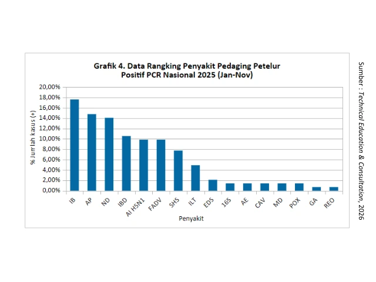
[ASLI DARI SUMBER PRIMER] Grafik 4: Data Peringkat Penyakit Pedaging dan Petelur Positif PCR Nasional 2025 (Jan–Nov), disalin utuh tanpa modifikasi dari Technical Education & Consultation PT Medion (Januari 2026).
[SUARA LAPANGAN DARING (YOUTUBE/BERITA/FORUM): NON-PEER-REVIEWED]
Untuk menguji apakah temuan jurnal Scopus V2 sejalan dengan realitas keluhan harian peternak Indonesia, dilakukan penelusuran netral pada 20 sumber lapangan daring terverifikasi aktif (HTTP 200, periode 2022–2026) yang terdiri dari 9 video YouTube praktisi/peternak, 8 berita wawancara peternak & asosiasi, serta 3 tulisan komunitas publik Indonesia. (Catatan: tautan forum tertutup login/diblokir seperti Quora/Reddit yang gagal dibaca penuh tidak dimasukkan demi menjaga prinsip verifikasi isi langsung).
[SUARA LAPANGAN DARING (YOUTUBE/BERITA/FORUM): NON-PEER-REVIEWED]
| No | Kanal | Narasumber / Kanal, Tahun & Sektor | Keluhan / Masalah Utama di Lapangan | Solusi Sementara yang Dipakai | Tautan Terverifikasi (HTTP 200) |
|---|---|---|---|---|---|
| 1 | YouTube | Edufarmers: Wawancara Pak Fatkul (Peternak Trenggalek) (Okt 2023) (Broiler | Kerap merugi hingga belasan juta rupiah per siklus akibat ayam terserang penyakit menular dan gagal panen. | Perketat sanitasi, jadwal vaksinasi & disiplin biosekuriti manual. | YouTube: Edufarmers |
| 2 | YouTube | BaLe Saba (Praktisi Closed House) (Agu 2022) (Broiler | Serangan koksidiosis di kandang closed house merusak pencernaan dan memicu FCR membengkak. | Pengamatan feses manual & pengobatan antikoksidia reaktif. | YouTube: BaLe Saba |
| 3 | YouTube | FARM SULUNG [AYAM PETELUR] (Mei 2023) (Layer | Ayam petelur terserang ngorok (CRD/pilek) tidak sembuh-sembuh yang mengganggu performa kandang. | Pemberian obat/antibiotik mandiri secara berulang berdasarkan panduan toko obat. | YouTube: FARM SULUNG |
| 4 | YouTube | FARM SULUNG [AYAM PETELUR] (Apr 2023) (Layer | Produksi telur menurun/tidak teratur akibat kombinasi stres, penyakit, dan gangguan nutrisi (termasuk kelainan kualitas telur). | Pemberian vitamin/suplemen & obat secara reaktif setelah produksi telanjur turun. | YouTube: FARM SULUNG |
| 5 | YouTube | Edufarmers (Jan 2024) (Broiler | Heat stress saat suhu kandang melampaui 28°C dan kelembapan 60–70% memicu panting dan penurunan performa. | Buka tirai manual, tambah kipas/air dingin, dan berikan vitamin C/elektrolit. | YouTube: Edufarmers |
| 6 | YouTube | Ternak Mania (Apr 2022) (Broiler | Heat stress akut maupun kronis akibat suhu & kelembapan kandang melewati zona nyaman menekan pertumbuhan broiler. | Pengaturan ventilasi manual, penjarangan kandang, dan suplemen anti-stres. | YouTube: Ternak Mania |
| 7 | YouTube | INSPIRASI TERNAK (Mei 2024) (Broiler | Ciri pemeliharaan gagal (pertumbuhan lambat sejak awal/DOC, mortalitas naik, FCR bengkak) sering terlambat dideteksi peternak. | Pengecekan visual harian & evaluasi manual catatan performa. | YouTube: INSPIRASI TERNAK |
| 8 | YouTube | INSPIRASI TERNAK (Apr 2023) (Broiler (CH) | Bahaya listrik padam di closed house menghentikan blower/exhaust dan memicu kematian massal akibat panas & kehabisan oksigen. | Genset cadangan manual & buka tirai darurat manual. | YouTube: INSPIRASI TERNAK |
| 9 | YouTube | Edufarmers (Jun 2024) (Broiler | Ketiadaan disiplin recording (pencatatan) pertumbuhan, konsumsi pakan, FCR, dan kematian membuat masalah kesehatan & finansial terlambat diketahui. | Pencatatan manual di kertas kontrol kandang & evaluasi mingguan. | YouTube: Edufarmers |
| 10 | Berita | TROBOS Livestock: Wawancara Hari Wibowo (Hari Farm, 10.000 ekor) (Mar 2024) (Layer | Wabah Avian Influenza (AI) awalnya dikira snot (gejala pilek mirip); kematian meningkat dari 4 menjadi 80 ekor/hari (300 ekor/bulan), HDA turun dari 82% menjadi 60%, lalu 40%. | Revaksinasi reaktif, turunkan protein pakan ke 14% & tambah jagung untuk energi pemulihan. | TROBOS Livestock (2024) |
| 11 | Berita | Afederasi: Wawancara Eko (Peternak Bareng, Jombang) (Okt 2025) (Layer | Cuaca panas ekstrem (heat stress) menurunkan nafsu makan ayam, produksi telur turun 5%–10% (dari normal 275–300 kg/hari), dan cangkang telur memucat. | Penanganan stres panas manual, tambah vitamin & pengaturan minum. | Afederasi (Okt 2025) |
| 12 | Berita | TROBOS Livestock: Kusnan (Perwakilan PER-MINDO) (Agu 2025) (Broiler | Realita FCR peternak rakyat 1,5–1,6 (butuh 2,4–2,8 kg pakan untuk bobot 1,6–1,8 kg) tertekan berat saat harga livebird jatuh ke Rp16.000–Rp17.000/kg. | Efisiensi biaya operasional kandang seadanya & menuntut perbaikan tata niaga. | TROBOS Livestock (Agu 2025) |
| 13 | Berita | Detik Jateng & Kompas Regional: Wawancara Susilo (Ketua PINSAR Jateng) (Jun 2026) (Broiler | Pemadaman listrik byar-pet pada malam hari fase brooding (anak ayam 1–14 hari) membuat DOC gelap/kedinginan, menumpuk, dan memicu deplesi hingga 50% serta kerugian puluhan juta rupiah. | Menyalakan genset manual (terkendala modal BBM bagi peternak kecil). | Detik Jateng (2026) | Kompas Regional (2026) |
| 14 | Berita | Kompas Medan: Wawancara Dandi (Peternak CH 30.000 ekor, Deli Serdang) (Jun 2026) (Broiler (CH) | Blackout Sumatera & antrean/kelangkaan BBM solar membuat genset mati sehingga 800 ekor broiler mati dalam sehari. | Berburu solar manual hingga ke kota (Medan) untuk menghidupkan genset tunggal. | Kompas Medan (Jun 2026) |
| 15 | Berita | ANTARA News Aceh: Muhammad Hatta (Peternak Abdya) (Okt 2025/2026) (Broiler (CH) | Listrik PLN padam 3 hari merusak genset sehingga 18.000 ekor broiler siap panen mati massal (taksiran rugi ~Rp800 juta). | Genset tunggal nonstop (mengalami kerusakan saat pemadaman panjang), berujung gugatan hukum ke PLN. | ANTARA News Aceh |
| 16 | Berita | ANTARA News Kalsel: Saipul Hadi (Peternak CH, HST) (Jul 2026) (Broiler (CH) | Pemadaman listrik mendadak >5 jam disertai gangguan genset menewaskan >5.000 ekor broiler akibat kepanasan akut. | Genset cadangan tunggal tanpa sistem proteksi/cadangan berlapis. | ANTARA News Kalsel (Jul 2026) |
| 17 | Berita | BeritaJatim: Peternakan Sultan, Madiun (Sep 2026) (Unggas/Broiler | Kelemahan pengawasan ABK & logistik pakan: oknum anak kandang mencuri puluhan sak pakan secara berulang sejak awal 2026 (kerugian puluhan juta rupiah). | Pemasangan CCTV setelah pemilik mencurigai selisih stok pakan berkepanjangan. | BeritaJatim (Sep 2026) |
| 18 | Komunitas | Kompasiana: jafvetchannel1485 (Okt 2025) (Layer |
Pada ayam petelur fase tua (>70 minggu), metabolisme melambat, FCR melambung, dan produksi telur menurun sehingga membebani biaya pakan. | Penyesuaian porsi & strategi pemberian pakan manual pada flok tua. | Kompasiana (Okt 2025) |
| 19 | Komunitas | Kompasiana: pujiaris4473 (Sentra Blitar) (Jun 2022) (Layer |
Populasi layer Blitar turun (26,82 juta menjadi 20,54 juta ekor) akibat jepit harga pakan–telur diperparah cuaca ekstrem (heat stress) yang memicu panting dan menurunkan produktivitas. | Penyesuaian pakan alternatif & efisiensi operasional manual demi bertahan. | Kompasiana Blitar (2022) |
| 20 | Komunitas | Chickin.id Community Blog (Mar 2025) (Broiler | Tantangan pengelolaan SDM/ABK 24 jam di kandang: fokus anak kandang mudah terpecah (misal musim libur/hari raya) sehingga manajemen pakan, minum, dan suhu rawan lalai. | Pembagian jadwal piket manual & pengawasan langsung pemilik kandang. | Chickin.id Blog (Mar 2025) |
(Catatan pembanding khusus isu AMR: Pada penelusuran berita industri 2022–2026, ditemukan 1 artikel TROBOS Livestock Sep 2025 tentang resistensi antibiotik bakteri snot, namun narasumbernya adalah peneliti BRIN, bukan keluhan spontan peternak di kandang).
[SINTESIS DAN PENILAIAN INDIKATIF AI AGENT: PERLU VALIDASI PENELITI]
Triangulasi 35 artikel Tier-1 (dikelompokkan berdasarkan kohort/studi independen) terhadap 20 sumber lapangan daring di atas menunjukkan 3 pola utama:
Konvergensi Tinggi (Kuat di Jurnal Tier-1 sekaligus Ramai Dikeluhkan Peternak, Kuadran I):
- Wabah Penyakit & Biosekuriti Lemah (7 kohort independen Tier-1 × 6/20 sumber daring): Kedua sumber kompak menyoroti kemiripan gejala awal penyakit (misal AI dikira snot di Hari Farm, sebuah peternakan ayam petelur), tingginya kematian/penurunan HDA (82%→40%, pada kasus petelur tersebut), dan kerugian puluhan juta.
- Inefisiensi Pakan, FCR Bengkak & Produktivitas Flok (9 kohort independen Tier-1 × 7/20 sumber daring): Dominasi biaya pakan, FCR bengkak akibat koksidiosis/manajemen/umur tua, dan tekanan margin muncul konsisten di jurnal maupun keluhan harian peternak.
- Heat Stress & Instabilitas Mikroklimat (7 studi independen Tier-1 × 4/20 sumber daring): Terkonfirmasi dari HSI nasional 12 bulan & 70,3% THI berat di CH Jabar hingga kesaksian langsung peternak Jombang (produksi turun 5%–10% & kerabang pucat) dan sentra Blitar.
- Pencatatan (Recording) Silo & Pengawasan SDM/ABK (6 kohort independen Tier-1 × 4/20 sumber daring): Jurnal Q1 (Chapot 2023, 2024) menyoroti data silo & sulitnya rekrutmen pekerja kompeten, sedangkan lapangan daring menambahkan dimensi operasional konkret berupa kelalaian piket 24 jam dan kebocoran/pencurian pakan oleh oknum ABK (kasus Madiun Sep 2026).
Gap Tipe 1: Tinggi di Jurnal Scopus Q1, tetapi Hampir Tidak Dikeluhkan Peternak (Research-Driven / Latent Problem, Kuadran IV): - Antibiotik Profilaktik (AMU) & Resistensi Antimikroba (AMR/MDR): Di V2, isu ini tampak mendominasi (11 paper) dan duduk di peringkat #4. Namun audit V3 mengungkap dua koreksi krusial:
Anwar Sani et al., 2023, 2024, 2025, 2026) berasal dari 1 kohort yang sama (19 farm broiler Jawa Barat: proyek CORNERSTONE Utrecht–IPB–Kementan). Jika dihitung secara jujur per kohort independen, jumlahnya adalah 6 kohort/review independen, bukan 11 bukti geografis terpisah.0/20 keluhan spontan peternak): Di YouTube dan wawancara media, peternak nyaris tidak pernah mengeluhkan AMR; sebaliknya mereka memandang antibiotik sebagai upaya pencegahan berbiaya rendah (Anwar Sani et al., 2026). Suara kekhawatiran AMR di media Indonesia berasal dari peneliti BRIN/regulator/ASOHI. Ini menjadikan AMU/AMR sebagai masalah laten berisiko jangka panjang (public health & therapy failure), bukan pain point yang dirasakan peternak sehari-hari.Gap Tipe 2: Sangat Ramai Dikeluhkan Peternak Daring, tetapi Minim Jurnal Scopus Q1 (Field-Driven / Under-Researched Problem, Kuadran II):
- Pemadaman Listrik (Blackout), Beban Energi & Modal Closed House (4 studi independen SINTA 2/Q3 × 5/20 sumber daring): Kasus kematian massal akibat listrik padam, baik di closed house (Aceh 18.000 ekor/Rp800 jt; HST Kalsel >5.000 ekor; Deli Serdang 800 ekor) maupun pada fase brooding malam hari (PINSAR Jateng: deplesi hingga 50%), sering muncul dalam keluhan peternak dan asosiasi, namun nyaris belum diteliti sebagai topik utama di jurnal Scopus Q1 Indonesia 2021–2026.
- Kerusakan Fisik Kerabang Telur (Retak/Tipis/Pucat) & Grading Manual (2 studi lokal SINTA 2 × 2/20 sumber daring): Baik di literatur Tier-1 maupun keluhan daring, kelainan kerabang lebih sering muncul sebagai gejala sekunder dari heat stress, umur tua, atau penyakit, bukan sebagai kendala tunggal terbesar di peternak rakyat.
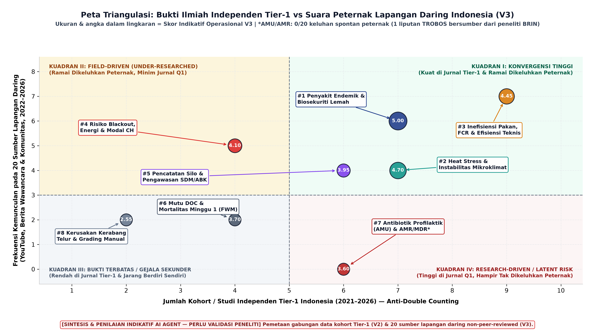
[SINTESIS DAN PENILAIAN INDIKATIF AI AGENT: PERLU VALIDASI PENELITI] Peta 2×2 kuadran yang membandingkan jumlah kohort/studi independen Tier-1 Indonesia (2021–2026, anti-double counting) terhadap frekuensi kemunculan pada 20 sumber lapangan daring non-peer-reviewed (2022–2026).
[SINTESIS DAN PENILAIAN INDIKATIF AI AGENT: PERLU VALIDASI PENELITI]
Peringatan Transparansi: Matriks di bawah ini adalah alat bantu prioritisasi indikatif yang disusun oleh AI Agent, bukan peringkat tunggal dari satu sumber primer. Skor akhir berfungsi sebagai hipotesis kerja terstruktur untuk diuji dan ditetapkan ulang oleh peneliti (Tim Asprak) melalui wawancara primer lapangan.
Pada V2, pembobotan rata 25% untuk jumlah artikel Tier-1 berpotensi memicu bias publikasi (publication bias), karena topik yang banyak diteliti pada satu kohort riset internasional (AMU/AMR) memperoleh bobot tinggi, sementara keluhan akut lapangan yang belum banyak diteliti di Scopus Q1 (blackout listrik) berada di peringkat bawah. Di V3, rubrik diperbaiki dengan dua koreksi:
1. Bukti ilmiah (D4) dihitung per kohort/lokasi independen (4 paper Anwar Sani 2023–2026 dihitung 1 kohort, 2 paper Chapot 2023–2024 dihitung 1 kohort), bukan jumlah judul artikel.
2. Bobot Operasional menitikberatkan dampak nyata di kandang dan suara lapangan:
- D1: Dampak Ekonomi & Struktur Biaya di Peternakan (30%): Pengaruh langsung pada HPP, margin, atau risiko kerugian akut per siklus/insiden.
- D2: Dampak Produktivitas, Kualitas Produk & Mortalitas Ternak (30%): Kematian flok, defisit ADG/HDP, pembengkakan FCR, atau penurunan mutu/kesejahteraan.
- D3: Kesenjangan Solusi Sementara & Frekuensi Keluhan Lapangan Daring (25%): Gabungan tingkat kegagalan praktik manual saat ini dan frekuensi keluhan spontan pada 20 sumber daring.
- D4: Kekuatan Bukti Ilmiah Independen Tier-1 Indonesia 2021–2026 (15%): Jumlah kohort/studi independen terverifikasi (5 = ≥5 kohort lintas provinsi incl. Q1/Q2; 4 = 3–4 kohort incl. Q1/Q2/S1; 3 = 2–4 studi dominan S2/Q3; 2 = ≤2 studi lokal).
[SINTESIS DAN PENILAIAN INDIKATIF AI AGENT: PERLU VALIDASI PENELITI]
| Peringkat Indikatif V3 | Kandidat Masalah Teknis-Operasional (On-Farm) | Kohort Indep. Tier-1 | Keluhan Daring (n=20) | D1: Ekonomi (30%) | D2: Prod/Mort (30%) | D3: Solusi & Daring (25%) | D4: Bukti Indep. (15%) | Skor Operasional (Utama) | Uji Sensitivitas: Bobot Rata (25%×4) | Catatan Bias & Stabilitas | Validasi Wawancara Primer (Besok: Tim Asprak) |
|---|---|---|---|---|---|---|---|---|---|---|---|
| #1 | Wabah Penyakit Endemik & Lemahnya Biosekuriti Kandang Rakyat | 7 | 6/20 | 5 | 5 | 5 | 5 | 5,00 | 5,00 (#1) | Sangat Stabil (Invarian #1 di semua skema; kuat di jurnal & peternak). | (Belum diisi: input hasil wawancara) |
| #2 | Cekaman Panas (Heat Stress) & Instabilitas Mikroklimat Tropis | 7 | 4/20 | 4 | 5 | 5 | 5 | 4,70 | 4,75 (#2) | Sangat Stabil (Invarian #2 di semua skema; data layer Q1 RI masih terbatas). | (Belum diisi: input hasil wawancara) |
| #3 | Inefisiensi Pakan, Pembengkakan FCR & Kesenjangan Produktivitas Flok | 9 | 7/20 | 5 | 4 | 4 | 5 | 4,45 | 4,50 (#3) | Sangat Stabil (Invarian #3; D3=4 karena CH & kontrak sebagian sudah menekan FCR). | (Belum diisi: input hasil wawancara) |
| #4 | Risiko Blackout Listrik, Beban Energi & Hambatan Modal Closed House | 4 | 5/20 | 4 | 4 | 5 | 3 | 4,10 | 4,00 (#4) | Sensitif Bobot (Kuat di keluhan daring & konteks Mitra PT Zara, namun blackout belum ada di Scopus Q1). | (Belum diisi: input hasil wawancara) |
| #5 | Pencatatan Data (Recording) Silo, Lemahnya Pengawasan & SDM/ABK | 6 | 4/20 | 3 | 4 | 5 | 4 | 3,95 | 4,00 (#5) | Cukup Stabil (Dampak ekonomi bersifat tidak langsung; dimensi pencurian/kelalaian ABK kuat di lapangan). | (Belum diisi: input hasil wawancara) |
| #6 | Variabilitas Mutu DOC, Mortalitas Minggu Pertama (FWM) & Kesejahteraan | 4 | 2/20 | 3 | 4 | 4 | 4 | 3,70 | 3,75 (#6) | Di luar Top 5; berfungsi sebagai pemicu hulu mortalitas awal & flushing antibiotik. | (Belum diisi: input hasil wawancara) |
| #7 | Ketergantungan Antibiotik Profilaktik (AMU) & Resistensi (AMR/MDR) | 6 | 0/20* | 3 | 4 | 3 | 5 | 3,60 | 3,75 (#7) | Sensitif Orientasi (Risiko sistemik/laten tinggi di Scopus Q1, tetapi biaya OVK kecil 0,47–1,62% & 0/20 keluhan spontan peternak). | (Belum diisi: input hasil wawancara) |
| #8 | Kerusakan Fisik Kerabang Telur (Retak/Tipis/Pucat) & Sortasi Manual | 2 | 2/20 | 2 | 3 | 3 | 2 | 2,55 | 2,50 (#8) | Stabil di #8 (Bukti Tier-1 sangat minim; di lapangan lebih sering muncul sebagai gejala sekunder heat stress/penyakit). | (Belum diisi: input hasil wawancara) |
#1–#3): Baik pada Bobot Operasional (30/30/25/15) maupun Bobot Rata (25/25/25/25), serta jika dibandingkan dengan V2, urutan #1 Penyakit dan Biosekuriti, #2 Heat Stress dan Mikroklimat, dan #3 Inefisiensi Pakan dan FCR tetap konsisten (invarian).#4–#7: Di V3, urutan #4 (Blackout/Energi/CH) dan #5 (Recording Silo & SDM/ABK) sama-sama bertahan masuk Top 5 di kedua skema bobot (Operasional & Bobot Rata), sementara #7 (AMU/AMR) turun dari #4 di V2 ke #7 setelah koreksi publication bias kohort, koreksi porsi biaya OVK riil (0,47%–1,62%), dan dimasukkannya frekuensi keluhan peternak daring. Jika wawancara primer Tim Asprak besok menemukan bahwa peternak sasaran lebih terbebani oleh kualitas DOC (#6) atau kegagalan pengobatan antibiotik (#7) dibanding blackout (#4), urutan #4–#7 dapat segera disesuaikan pada kolom validasi akhir.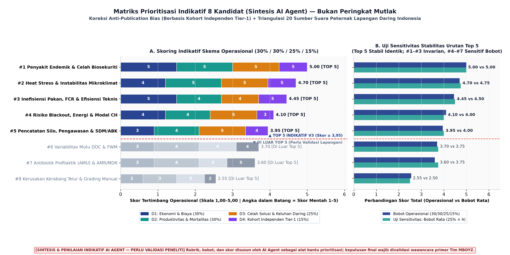
[SINTESIS DAN PENILAIAN INDIKATIF AI AGENT: PERLU VALIDASI PENELITI] Grafik prioritisasi indikatif 8 kandidat masalah teknis-operasional beserta uji sensitivitas perbandingan Bobot Operasional (30/30/25/15%) vs Bobot Rata (25% × 4).
(Penamaan diringkas agar tajam, operasional, dan jelas batas sebab-akibatnya; istilah teknis veteriner/agribisnis tetap dicantumkan pada uraian).
[SINTESIS DAN PENILAIAN INDIKATIF AI AGENT: PERLU VALIDASI PENELITI]): Konvergensi Tinggi (Kuadran I: 7 kohort independen Tier-1 × 6/20 sumber daring). Menjadi risiko dengan dampak finansial dan biologis terbesar: satu wabah HPAI dapat menghapus >10× margin kotor normal, biosekuriti eksternal kandang rakyat berada di titik terlemah (0,28), dan kemiripan gejala koinfeksi membuat peternak di lapangan kerap salah menduga wabah ganas (misal AI dikira snot).[DATA PRIMER TERVERIFIKASI: TABEL/VISUALISASI DISUSUN OLEH AI AGENT]):[Pemodelan Bio-Ekonomi Regional: Jawa Bagian Barat, 2023] Pada farm broiler Sektor 3 (3.000 ekor, margin normal Rp5,28 juta/siklus), 1 wabah HPAI H5N1 menimbulkan kerugian rata-rata Rp1,2–62,7 juta (none-8: −Rp53,89 jt; stamp-15 tanpa kompensasi: −Rp57,35 jt; early-8 jual dini: −Rp22,89 jt); peternak kontrak makloon menanggung rugi jauh lebih kecil (−Rp0,91 jt) sehingga rendah insentif biosekuriti (Pramuwidyatama et al., Prev. Vet. Med. Q1, 2023).[Survei Multi-Farm / Regional: Jawa Barat, 19 farm / 153 siklus, 2019–2023] Skor biosekuriti eksternal rata-rata hanya 0,28 (skala 0–1; internal 0,58); 4 farm yang skornya rendah di semua kategori biosekuriti termasuk farm yang keluar dari studi karena berhenti beternak atau berganti manajemen (Anwar Sani et al., Poultry Science Q1, 2025; angka 0,28 dan pernyataan ini diverifikasi ke teks penuh PMC12681536 pada 28 Nov 2026).[Surveilans Laboratorium Nasional: Tier 2, Jan–Nov 2025] Positif PCR nasional dipimpin IB (~17,7%), AP (~14,8%), ND (~14,1%), IBD (~10,6%), dan AI H5N1 (~9,9%); klinis broiler didominasi CRD (>31%) & Colibacillosis (~17%); serangan viral menekan HDP layer 9%–80% (PT Medion TEC, 2026).[Studi Kasus Lokal: Majalengka, Jabar, 11.000 broiler, 2026] Koinfeksi simultan AI H5 clade 2.3.2 + AI H9 + IB (CV 256%) + M. gallisepticum (31,25%) + koksidiosis (4.400 OPG) di bawah tekanan NH₃ 20 ppm (Hartady et al., Vet. Sci. Q1, 2026). Mortalitas lapangan Indonesia: OH 5%–10% vs CH <3% ([Data Nasional] BBPKH Cinagara, 2025); Jatim n=150 rata-rata 4,77% (Aji et al., TASJ S1, 2023); Bogor 12.000 ekor 10,16% (OH) vs 8,30% (CH) (Arif et al., JSV S2, 2024).[DATA PRIMER TERVERIFIKASI: TABEL/VISUALISASI DISUSUN OLEH AI AGENT] + [SUARA LAPANGAN DARING (YOUTUBE/BERITA/FORUM): NON-PEER-REVIEWED]):[SINTESIS DAN PENILAIAN INDIKATIF AI AGENT: PERLU VALIDASI PENELITI]): Konvergensi Tinggi (Kuadran I: 7 studi independen Tier-1 × 4/20 sumber daring). Bukti Q1 Indonesia mematahkan anggapan bahwa closed house otomatis bebas cekaman panas: 70,3% titik ukur di dalam kandang closed/semi-closed komersial Jawa Barat tetap berada di zona THI severe hingga life-threatening, sementara di lapangan peternak layer melaporkan penurunan panen telur langsung 5%–10% saat cuaca panas ekstrem.[DATA PRIMER TERVERIFIKASI: TABEL/VISUALISASI DISUSUN OLEH AI AGENT]):[Data Nasional: Indonesia, 2023] Suhu puncak mencapai 36°C dengan HSI rata-rata bulanan 155,5–165,4 (Barat, puncak 187,8) dan 150,0–166,4 (Timur, puncak 195,0), yang melampaui ambang nyaman (<150–160) pada seluruh 12 bulan (Sumiati et al., Animal Bioscience Q1, 2025, Tabel 6).[Survei Multi-Farm / Regional: Jawa Barat, 14 farm CH/semi-CH, 2.104 ekor, 84 titik ukur, 2025] 0,0% titik nyaman (THI <72), 62,0% severe, 8,3% life-threatening (>85, maks 86,2); suhu rata-rata 29,3°C, RH 81,9% (66%–96%), NH₃ 7,3 ppm (berkorelasi dengan CO₂ r_s = 0,583, p < 0,01); area dekat inlet paling basah/buruk; 40% ayam kena Foot-Pad Dermatitis (FPD) & 30% Hock Burn (Wilcox et al., Animal Welfare Q1, 2025).[Studi Kasus Lokal: Jawa Tengah, 180 Cobb 500 open-sided, 2026] Hanya 2 dari 35 hari di zona termonetral (pukul 11.00 rata-rata 34,1°C); beban panas kumulatif menjelaskan 61% variasi bobot (p < 0,01) & 54,5% feed intake (p < 0,001); defisit bobot hari ke-35 −552,1 g (~−22% di bawah target Cobb 500), RFCR +0,440; risiko kematian melonjak bila suhu pukul 16.00 >32,5°C (Mohammadi et al., AAVS Q3, 2026).[Studi Kasus Lokal: 4.200 CP-707 closed house, 2026] Kontrol suhu manual menyimpang signifikan di atas SOP (p = 0,001) dengan mortalitas 5,09% vs 2,36% saat terkendali stabil (p = 0,005) (Alvandika et al., JIPI S2, 2026). Di Blitar, suhu tinggi menurunkan HDP layer ke level terendah (63%) dibanding Payakumbuh (68%) (Ilham et al., JITV S1, 2021).[DATA PRIMER TERVERIFIKASI: TABEL/VISUALISASI DISUSUN OLEH AI AGENT] + [SUARA LAPANGAN DARING (YOUTUBE/BERITA/FORUM): NON-PEER-REVIEWED]):Ilham 2021 dan wawancara lapangan); angka defisit −552 g berasal dari studi lokal 180 ekor di Jawa Tengah.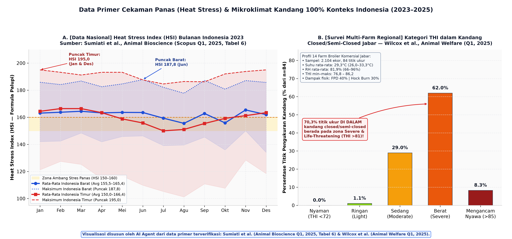
[DATA PRIMER TERVERIFIKASI: TABEL/VISUALISASI DISUSUN OLEH AI AGENT] Seluruh data bersumber dari Sumiati et al. (Animal Bioscience* Q1, 2025, Tabel 6) [Data Nasional] dan Wilcox et al. (Animal Welfare Q1, 2025) [Survei Multi-Farm / Regional].*
[SINTESIS DAN PENILAIAN INDIKATIF AI AGENT: PERLU VALIDASI PENELITI]): Konvergensi Tertinggi secara Jumlah Sumber (Kuadran I: 9 kohort independen Tier-1 × 7/20 sumber daring). Di luar faktor harga pakan eksternal, pakan menyerap 62,3%–82,1% biaya usaha dan bukti stochastic frontier menunjukkan inefisiensi manajemen di dalam kandang mencapai 24,2%–31,1% pada broiler serta 93,7% farm layer Blitar inefisien secara DEA.[DATA PRIMER TERVERIFIKASI: TABEL/VISUALISASI DISUSUN OLEH AI AGENT]):[Survei Multi-Farm / Regional: Banten, 180 farm broiler, 2023] Pakan = 62,27% (mandiri) & 67,67% (kontrak); Pakan + DOC = 92,74%–93,77% biaya total. Efisiensi teknis (TE) mandiri hanya 0,689 (inefisiensi 31,1%; γ = 0,9878, p < 0,01, menunjukkan faktor yang dominan dapat dikendalikan manajemen kandang) vs kontrak 0,893 (Junaidi et al., JWPR Q3, 2023).[Survei Multi-Farm / Regional: Jawa Timur, 150 farm broiler kemitraan, 2022] Rata-rata inefisiensi biaya 24,2% (5,6% hingga >60,5%); pakan 53,63% biaya tahunan (Aji et al., TASJ S1/Q2, 2023).[Survei Multi-Farm / Regional: Layer Indonesia] HDP layer rakyat rata-rata hanya 65% (Blitar 63%, Sidrap 64%, Payakumbuh 68%) vs standar 83%, dengan 93,7% peternak Blitar inefisien (DEA 0,881) dan pakan 79,9%–82,1% biaya/kg telur (Ilham et al., JITV S1, 2021). Di Blitar (30 farm, 2025), HDP umur 72 minggu hanya 65%–70% vs standar 79%–81%, di mana buruknya GFP menjelaskan 41,1% variasi HDP (p = 0,019) (Riyanto et al., JIIP S2, 2025). Di 3 provinsi Jawa (114 farm layer), biaya operasional naik +14,84% dengan R/C tipis 1,14–1,15 (Priyono et al., TASJ S1/Q2, 2024).[Studi Kasus Lokal Terpisah: Kesenjangan FCR OH vs CH] Aceh Utara (54.000 CP707): FCR 5 minggu 1,76 vs 1,55 (Δ +0,21; minggu 4–5: 2,06 vs 1,61), bobot −15,9%, ADG −23,0%, IP 299 vs 414 (Zulfan et al., Acta Sci. Q3, 2026); Trenggalek (20.000 ekor): 1,605 vs 1,416 (Δ +0,189) (Laili et al., JAVEST S2, 2022); Bogor/PT Zara (12.000 Cobb): 1,49 vs 1,40 (Δ +0,09), bobot panen CH +5,21% (Arif et al., JSV S2, 2024). Acuan nasional Kementan: OH >1,65 vs CH 1,45–1,55 ([Data Nasional] BBPKH Cinagara, 2025).[DATA PRIMER TERVERIFIKASI: TABEL/VISUALISASI DISUSUN OLEH AI AGENT] + [SUARA LAPANGAN DARING (YOUTUBE/BERITA/FORUM): NON-PEER-REVIEWED]):Ilham et al. (2021) dikumpulkan pada 2017 (hanya proporsi biaya & skor efisiensi yang dikutip, bukan nominal Rupiah); 3 studi perbandingan FCR OH vs CH masing-masing berskala lokal dengan galur/umur panen berbeda sehingga tidak dirata-ratakan menjadi angka nasional.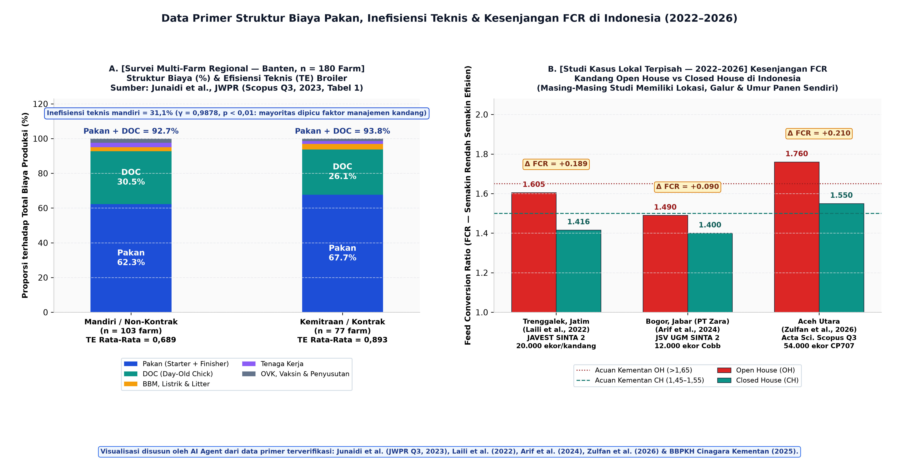
[DATA PRIMER TERVERIFIKASI: TABEL/VISUALISASI DISUSUN OLEH AI AGENT] Seluruh data bersumber dari Junaidi et al. (JWPR* Q3, 2023, Tabel 1) [Survei Multi-Farm / Regional], serta 3 studi perbandingan FCR lokal terpisah (Laili 2022, Arif 2024, Zulfan 2026) [Studi Kasus Lokal] dan acuan Kementan RI (2025).*
[SINTESIS DAN PENILAIAN INDIKATIF AI AGENT: PERLU VALIDASI PENELITI]): Masalah Field-Driven Utama (Kuadran II; 4 studi independen SINTA 2/Q3 × 5/20 sumber daring). Masuk kembali ke Top 5 V3 setelah koreksi publication bias V2 dan triangulasi suara peternak daring: kendala modal closed house (3–4× lipat, payback 4,5–7 tahun) membatasi modernisasi peternak rakyat, sementara bagi peternak yang sudah beralih ke closed house maupun pada fase brooding, pemadaman listrik berkepanjangan dapat menimbulkan kerugian modal yang besar dalam hitungan jam, sekaligus selaras dengan kendala beban listrik blower PLN dan gas LPG brooding yang disampaikan Mitra PT Zara Propertifarm (04_MITRA_PT_ZARA_PROPERTIFARM.md).[DATA PRIMER TERVERIFIKASI: TABEL/VISUALISASI DISUSUN OLEH AI AGENT] + [SUARA LAPANGAN DARING (YOUTUBE/BERITA/FORUM): NON-PEER-REVIEWED]):[Data Nasional: Acuan Kementan RI, 2025] Investasi awal kandang closed house mencapai 3–4 kali lipat dibanding open house (BBPKH Cinagara Kementan, 2025); spesifikasi impor 20.000 ekor/lantai menembus ~Rp2 Miliar/lantai (04_MITRA_PT_ZARA_PROPERTIFARM.md).[Studi Kasus Lokal: Jombang, Jatim, 26.000 ekor CH, 2023] Periode balik modal (payback period) closed house relatif panjang bagi peternak kecil: 43 siklus (~7 tahun) pada semi-otomatis (R/C 1,07, NPM 6,8%) dan 27 siklus (~4,5 tahun) pada otomatis (R/C 1,12, NPM 10,7%) dengan lonjakan biaya operasional listrik dan gas (Fikrianti et al., JAI IPB S2, 2023).[Survei Multi-Farm / Regional: Banyumas, Jateng, 61 farm broiler, 2023] Penyusutan kandang dan peralatan berpengaruh signifikan terhadap pendapatan peternak (laba rata-rata/1.000 ekor/bulan Rp3,63 jt di OH vs Rp4,90 jt di CH) (Mastuti et al., Animal Production S2, 2023).[Survei Multi-Farm / Regional: Banten, 180 farm broiler, 2023] Biaya rutin BBM, listrik & litter menyumbang 2,29% (mandiri) dan 3,17% (kontrak, komponen biaya variabel terbesar ke-3 setelah pakan dan DOC) (Junaidi et al., JWPR Q3, 2023).[SUARA LAPANGAN DARING (YOUTUBE/BERITA/FORUM): NON-PEER-REVIEWED] Insiden Blackout Aktual 2025–2026: Aceh Barat Daya: listrik padam 3 hari & genset rusak tewaskan 18.000 ekor broiler (rugi ~Rp800 juta) (ANTARA Aceh); HST Kalsel: padam >5 jam tewaskan >5.000 ekor (ANTARA Kalsel, Jul 2026); Deli Serdang: langka solar genset tewaskan 800 ekor/hari (Kompas Medan, Jun 2026); Jawa Tengah: Ketua PINSAR Jateng melaporkan pemadaman malam fase brooding 1–14 hari berpotensi memicu deplesi anak ayam hingga 50% & rugi puluhan juta (Detik Jateng, Jun 2026; Kompas Regional, Jun 2026).[SUARA LAPANGAN DARING (YOUTUBE/BERITA/FORUM): NON-PEER-REVIEWED]):[SINTESIS DAN PENILAIAN INDIKATIF AI AGENT: PERLU VALIDASI PENELITI]): Konvergensi Tinggi (Kuadran I: 6 kohort independen Tier-1 × 4/20 sumber daring). Berfungsi sebagai bottleneck operasional lintas masalah #1–#4: pencatatan kertas yang terpisah (silo), kegagalan pelaporan publik (iSIKHNAS), rendahnya kompetensi teknis ABK, serta celah pengawasan harian (kelalaian piket hingga pencurian pakan) secara langsung memperpanjang keterlambatan respons terhadap penyakit, penyimpangan suhu, dan kebocoran pakan.[DATA PRIMER TERVERIFIKASI: TABEL/VISUALISASI DISUSUN OLEH AI AGENT]):[Survei Multi-Farm / Regional: 5 Provinsi Jawa, 56 pemangku kepentingan, 2023–2024] Pencatatan data kesehatan & produksi di 4 model bisnis (perusahaan, kontrak, kemitraan, mandiri) bersifat silo (campuran kertas & spreadsheet dasar) tanpa kapasitas analitik dan tanpa standar interoperabilitas; sistem pemerintah iSIKHNAS dinilai tidak efektif di unggas, sehingga informasi bergantung informal pada WhatsApp & TSO perusahaan input (Chapot et al., Prev. Vet. Med. Q1, 2023; Chapot et al., PLOS ONE Q1, 2024).[Survei Multi-Farm / Regional: Nasional Indonesia, 200 pekerja kandang, 2023] Sebanyak 33,0% pekerja kandang belum pernah mendengar tentang Avian Influenza (AI); sumber info utama bukan pelatihan kandang, melainkan petugas kesehatan (36%) & televisi (34%) (Rehman et al., PeerJ Q1, 2023).[Survei Multi-Farm / Regional: Jawa Timur n=150 & Banten n=180 & Blitar n=30] Rata-rata pendidikan formal peternak ~9 tahun (9,42 thn di Jatim; 9,08–9,77 thn di Banten), dan tingkat pendidikan serta pengalaman secara statistik signifikan menekan inefisiensi biaya 24,2% (Aji et al., TASJ S1, 2023; Junaidi et al., JWPR Q3, 2023). Di Blitar, rendahnya kepatuhan GFP menjelaskan 41,1% variasi produksi telur harian (p = 0,019) (Riyanto et al., JIIP S2, 2025). Pada survei layer Asia (103 produsen Indonesia), 72% menyatakan butuh pelatihan & pendampingan teknis (de Luna et al., Front. Vet. Sci. Q1, 2022).[DATA PRIMER TERVERIFIKASI: TABEL/VISUALISASI DISUSUN OLEH AI AGENT] + [SUARA LAPANGAN DARING (YOUTUBE/BERITA/FORUM): NON-PEER-REVIEWED]):Chapot et al. (2023, 2024) berfokus di Pulau Jawa (dominan layer), sedangkan kasus pencurian pakan oleh ABK (BeritaJatim 2026) adalah kasus insidental lokal (belum ada statistik persentase kecurangan ABK berskala nasional).[SINTESIS DAN PENILAIAN INDIKATIF AI AGENT: PERLU VALIDASI PENELITI]
- #6 Variabilitas Mutu DOC & Mortalitas Minggu Pertama (FWM: Skor 3,70): Rata-rata FWM di Jawa Barat 1,9%–2,1% (maks 10,6%) vs standar ≤1% dengan DOC berasal dari 39 hatchery (Anwar Sani et al., 2025, 2026); menjadi pemicu hulu utama peternak melakukan flushing antibiotik hari 1–4.
- #7 Ketergantungan Antibiotik Profilaktik (AMU) & Resistensi (AMR/MDR: Skor 3,60): Secara ilmiah tetap merupakan risiko sistemik & kesehatan masyarakat paling terdokumentasi di Scopus Q1 Indonesia (6 kohort independen: 86%–88% profilaktik, 60,8% WHO HPCIA, enrofloxacin overdosis 3–4× EMA DDDvet, E. coli ciprofloxacin NWT 93%, 100% MDR pasar Aceh, 81,8% peternak layer tidak tahu larangan kolistin, dan edukasi gagal menurunkan AMU/AMR). Posisinya turun dari #4 (V2) ke #7 (V3) semata-mata karena bobot operasional V3 memperhitungkan porsi biaya OVK yang kecil (0,47%–1,62%) dan absennya keluhan spontan peternak daring (0/20). Jika wawancara primer menunjukkan maraknya kegagalan pengobatan bakteri di kandang, kandidat ini tetap sangat strategis.
- #8 Kerusakan Fisik Kerabang Telur (Retak/Tipis/Pucat) & Sortasi Manual (Skor 2,55): Bukti Tier-1 2021–2026 baru terbatas pada 2 studi lokal SINTA 2 (Wahidiyah et al., 2026 mencatat telur abnormal <1% di CH UB Teaching Farm; Septiana et al., 2022 kerabang tipis 0,52% vs 0,21% di Bogor), dan di suara lapangan lebih sering muncul sebagai gejala ikutan heat stress/umur/penyakit.
[SINTESIS DAN PENILAIAN INDIKATIF AI AGENT: PERLU VALIDASI PENELITI]
| Aspek Audit | Kondisi pada V2 | Perbaikan & Perubahan pada V3 |
|---|---|---|
| Transparansi Peran AI Agent | Tabel dan grafik skoring buatan AI sebelumnya diberi label Pemeringkatan Objektif atau Tabel Skoring Objektif. | Dihapus dan diperbaiki. Seluruh tabel, grafik (caption Markdown + footer dalam PNG), dan penilaian kini memakai 4 Label Asal (Provenance Tags) eksplisit; dipisahkan tegas antara peringkat asli per domain (Lapisan 1), suara lapangan daring (Lapisan 2), dan sintesis indikatif AI (Lapisan 3). |
| Koreksi Publication Bias (Kohort Independen) | Menghitung jumlah artikel mentah (misal 4 paper Anwar Sani 2023–2026 dari 1 kohort Jabar ikut membesarkan hitungan 11 paper AMU/AMR). |
Dihitung per kohort/studi independen (4 paper Anwar Sani = 1 kohort; 2 paper Chapot = 1 kohort) dan bobot bukti jurnal diturunkan dari 25% menjadi 15%, dialihkan ke dampak ekonomi (30%), produktivitas/mortalitas (30%), serta celah solusi & keluhan daring (25%). |
| Triangulasi Suara Peternak Daring | Belum ada pemetaan terstruktur terhadap keluhan peternak di YouTube, berita wawancara, dan komunitas publik. | Ditambahkan 20 sumber suara lapangan daring Indonesia (2022–2026, seluruh tautan terverifikasi HTTP 200) + Analisis Gap 2×2 Kuadran yang membuktikan perbedaan nyata antara research-driven problem (AMU/AMR: 0/20 keluhan spontan) dan field-driven problem (blackout/energi/ABK). |
| Pergeseran Peringkat Top 5 | #1 Penyakit (5,00), #2 Heat Stress (4,75), #3 Pakan/FCR (4,50), #4 AMU/AMR (4,50), #5 Data/SDM (4,00); Blackout di #7. |
#1–#3 Tetap Invarian (Penyakit 5,00; Heat Stress 4,70; Pakan/FCR 4,45). #4 kini Risiko Blackout, Energi & Modal CH (4,10), #5 Pencatatan Silo & SDM/ABK (3,95); AMU/AMR bergeser ke #7 (3,60) sebagai risiko laten. Stabilitas diuji lewat Uji Sensitivitas (Operasional vs Bobot Rata) + kolom kosong validasi wawancara primer Tim Asprak. |
| Penamaan Masalah | Judul panjang bergaya literatur veteriner. | Diringkas menjadi nama operasional tajam dan jelas batas sebab-akibatnya. |
jafvetchannel1485 (Okt 2025). Bagaimana Strategi Ayam Tua Tetap Efisien Tanpa Menurunkan Bobot Tubuh?. https://www.kompasiana.com/jafvetchannel1485/68e50c52c925c4772d167343/ayam-tua-otak-baru-menghemat-fcr-tanpa-menurunkan-bobot-tubuhpujiaris4473 (Jun 2022). Populasi Ayam Layer di Blitar Turun Drastis, Peternak Lakukan Berbagai Upaya Alternatif untuk Tetap Bertahan. https://www.kompasiana.com/pujiaris4473/6296eeb4ce96e567fd5ba243/populasi-ayam-layer-di-blitar-turun-drastis-peternak-lakukan-berbagai-upaya-alternatif-untuk-tetap-bertahan01_Context_Memory/04_MITRA_PT_ZARA_PROPERTIFARM.md: Konteks lapangan mitra lokal PT Zara Propertifarm Indonesia (KANOPIS).Catatan Verifikasi: Seluruh 32 aset gambar pada bagian Lampiran ini berlabel
[ASLI DARI SUMBER PRIMER: UNDUHAN/POTONGAN LANGSUNG JURNAL], diambil langsung dari publikasi resmi (unduhan Figure asli dari PT Medion, PMC CDN, Elsevier CDN, crop PNG 300 DPI dari file PDF resmi jurnal, atau tangkapan layar retina 2,5× dari tabel HTML resmi PMC) tanpa digambar ulang oleh AI, dan disimpan lokal pada02_Problem_Research/assets_v3/lampiran_jurnal_asli/. Seluruh file telah diinspeksi secara visual untuk memastikan keterbacaan angka dan tidak terpotong.
[DATA PRIMER TERVERIFIKASI: TABEL/VISUALISASI DISUSUN OLEH AI AGENT]
Audit cocok-silang baris-per-baris dilakukan antara nilai yang di-plot pada skrip Python pembuat 04_data_primer_heat_stress_indonesia_v3.png dan 05_data_primer_biaya_fcr_indonesia_v3.png terhadap potongan tabel/PDF asli jurnal di bawah ini:
| Grafik & Panel | Sumber Acuan Asli | Status Audit (TERVERIFIKASI SESUAI / DIKOREKSI) |
Catatan Teknis / Bukti Baris Tabel |
|---|---|---|---|
| Grafik 04: Panel A (HSI Bulanan Indonesia 2023) | Sumiati et al. (2025), Animal Bioscience Q1, Table 6 (hal. 10 PDF resmi animbiosci.org): lihat bukti L06 & L06b |
TERVERIFIKASI SESUAI |
Seluruh 72/72 angka (12 bulan Jan–Des × 6 seri: min/max/avg Indonesia Barat & Timur) cocok persis hingga 2 desimal (termasuk puncak Timur 195,00 pada Jan & Des dan puncak Barat 187,84 pada Jun); nol interpolasi. Catatan metodologis: Table 6 menggunakan formula HSI Palupi [48], dan caption Fig. 8 (L06b) mencatat data suhu 2023 bersumber dari BPS Pelalawan & BPS Bogor sebagai wilayah representatif. |
| Grafik 04: Panel B (Kategori THI, Suhu/RH & Dampak FPD/HB Jabar) | Wilcox et al. (2025), Animal Welfare Q1 (PMC12722053), Table 2, Table 3 & teks Results: lihat bukti L07a, L07b, L08, L09 |
TERVERIFIKASI SESUAI |
Distribusi THI (0,0% nyaman <72%; 1,1% ringan 73–76%; 29,0% sedang 77–80%; 62,0% berat 81–84%; 8,3% mengancam nyawa >85%; rentang 76,8–86,2) sesuai sepenuhnya dengan teks Results asli (total 100,4% adalah pembulatan bawaan artikel asli). Rerata suhu 29,3°C (26–33,3°C) & RH 81,9% (66–96%) sesuai sepenuhnya dengan Table 3 (L07a); FPD 40% (100%−60% skor 0) & HB 30% (100%−70% skor 0) pada kaki kiri (n = 2.104, 14 farm, 84 titik) sesuai sepenuhnya dengan Table 2 (L07b). |
| Grafik 05: Panel A (Struktur Biaya & Efisiensi Teknis Broiler Banten) | Junaidi et al. (2023), JWPR Q3, Table 1 (hal. 4), Table 3 (hal. 6) & Table 4 (hal. 8): lihat bukti L11 & L12 |
TERVERIFIKASI SESUAI |
Seluruh komponen biaya cocok persis hingga 2 desimal: Mandiri (n=103) Pakan 33,26% + 29,01% = 62,27%, DOC 30,47%, BBM/listrik/litter 2,29%, tenaga kerja 2,51%, OVK+vaksin 0,79% + 0,83% = 1,62%, penyusutan 0,59% + 0,26% = 0,85%, TE 0,689, γ = 0,9878 (p < 0,01); Kontrak (n=77) Pakan 20,38% + 47,29% = 67,67%, DOC 26,10%, BBM/listrik/litter 3,17%, tenaga kerja 1,68%, OVK+vaksin 0,31% + 0,16% = 0,47%, penyusutan 0,56% + 0,36% = 0,92%, TE 0,893. |
| Grafik 05: Panel B (Kesenjangan FCR Open House vs Closed House) | Laili et al. (2022) (L17), Arif et al. (2024) (L16), Zulfan et al. (2026) (L15), & BBPKH Cinagara Kementan (2025) (L19) |
TERVERIFIKASI SESUAI |
Seluruh nilai FCR, populasi & garis acuan sesuai sepenuhnya: Laili (2022) OH 1,605 vs CH 1,416 (20.000 ekor/kandang, hal. 1–3); Arif (2024) OH 1,49 vs CH 1,40 (12.000 ekor Cobb total 2 siklus × 2 kandang × 3.000 ekor di PT Zara Bogor, hal. 3–4 Table 2); Zulfan (2026) FCR keseluruhan 1–5 minggu OH 1,76 ± 0,04 vs CH 1,55 ± 0,01 (p < 0,001, total 54.000 ekor CP707: 48.000 CH + 6.000 OH, hal. 2 & 6 Table 1); garis acuan Kementan OH >1,65 & CH 1,45–1,55 cocok dengan Tabel 1 BBPKH Cinagara (2025) hal. 2 (L19). |
Kesimpulan Audit Validitas: Seluruh angka primer pada Grafik 04 dan Grafik 05 terverifikasi sesuai dengan tabel asli jurnal; tidak ditemukan angka fiktif maupun salah baca sehingga Bagian 1–6 V3 beserta Grafik 04 & 05 tidak memerlukan koreksi angka.
[ASLI DARI SUMBER PRIMER] Unduhan langsung berkas gambar resmi Grafik 1 dari artikel surveilans tahunan PT Medion TEC (Januari 2026).
Ringkasan Angka Kunci: CRD (~30%+ kasus 2025), Colibacillosis (~17%), Coccidiosis (~12%), CRD Kompleks (~10%), dan NE (~7%) mendominasi secara konsisten sebagai 5 besar penyakit klinis broiler Indonesia periode 2023–Nov 2025.
Sumber: https://www.medion.co.id/en/info-medion/overview-of-poultry-disease-analysis-2025-disease-projection-2026/
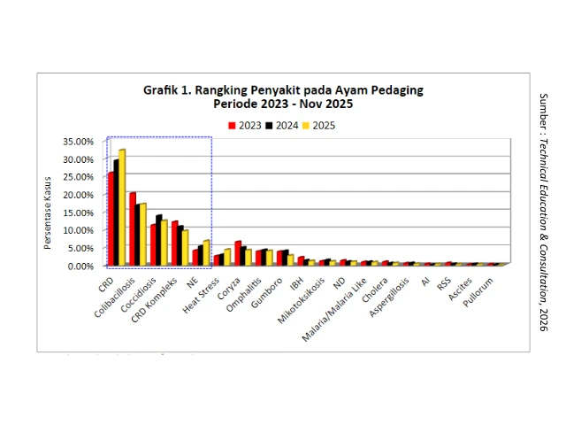
[ASLI DARI SUMBER PRIMER] Unduhan langsung berkas gambar resmi Grafik 3 dari artikel surveilans tahunan PT Medion TEC (Januari 2026).
Ringkasan Angka Kunci: CRD (~16%), Coryza/Snot (~15%), Cacingan (~12%), Colibacillosis (~10,5%), dan Fowl Cholera (~8%) merupakan 5 besar gangguan klinis utama pada ayam layer masa produksi di Indonesia (2023–Nov 2025).
Sumber: https://www.medion.co.id/en/info-medion/overview-of-poultry-disease-analysis-2025-disease-projection-2026/
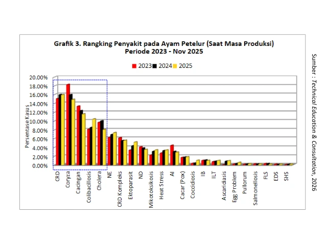
[ASLI DARI SUMBER PRIMER] Potongan PDF resmi WUR OA (edepot.wur.nl/588952), Table 4, halaman 7 (300 DPI).
Ringkasan Angka Kunci: Pada peternakan broiler mandiri & kontrak harga di Jawa Barat, wabah HPAI H5N1 membalik gross margin normal +Rp5,28 juta/siklus menjadi kerugian -Rp53,89 juta (none-8), -Rp57,35 juta (stamp-15), dan -Rp22,89 juta (early-8).
Sumber: https://doi.org/10.1016/j.prevetmed.2022.105833 | WUR OA PDF
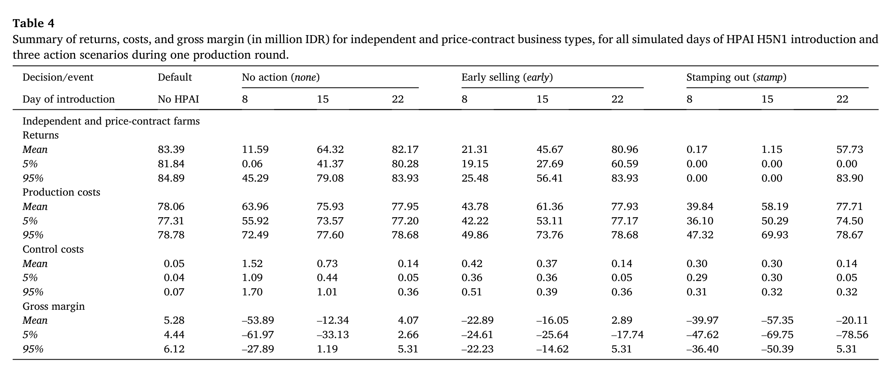
[ASLI DARI SUMBER PRIMER] Potongan PDF resmi WUR OA (edepot.wur.nl/588952), Fig. 2, halaman 7 (300 DPI).
Ringkasan Angka Kunci: Visualisasi ketimpangan risiko ekonomi wabah HPAI H5N1 pada hari ke-15 antara peternak mandiri/price-contract (kerugian hingga -Rp70 juta) dibandingkan skema makloon (margin mendekati nol/positif tipis).
Sumber: https://doi.org/10.1016/j.prevetmed.2022.105833 | WUR OA PDF
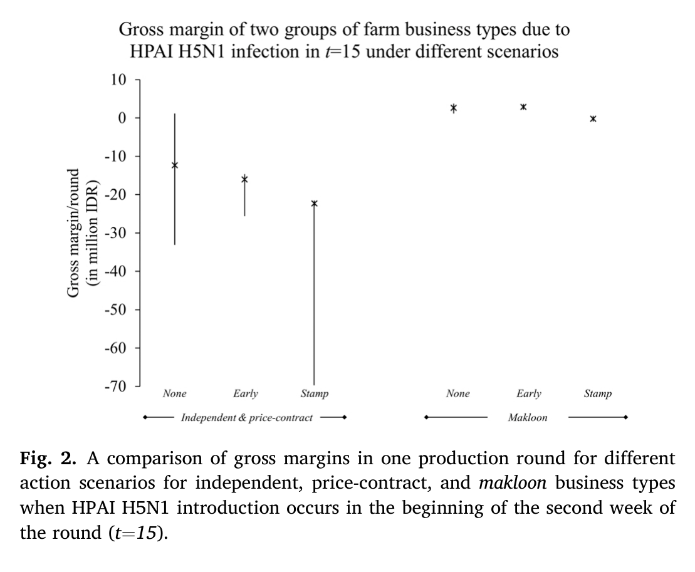
[ASLI DARI SUMBER PRIMER] Tangkapan layar retina 2,5× dari HTML resmi PMC (PMC12681536), Table 2.
Ringkasan Angka Kunci: Memuat 6 kategori skor biosekuriti (ExBio, IntBio, EmpEqui, Move, FeedWater, VetDrugs) dan mortalitas minggu pertama (Firstweekmort) pada 142 siklus produksi di 19 farm broiler Jabar; pada teks Results, rerata skor biosekuriti eksternal hanya 0,28 (0–0,67), pergerakan/pembelian 0,48, pekerja/peralatan 0,50, dan biosekuriti internal 0,58.
Sumber: https://doi.org/10.1016/j.psj.2025.106010 | PMC12681536
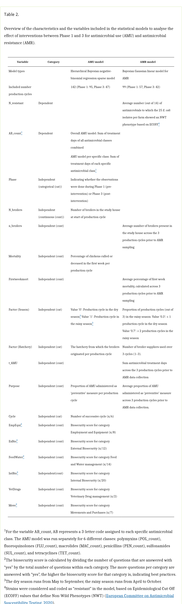
[ASLI DARI SUMBER PRIMER] Unduhan langsung berkas Figure 3 resmi dari PMC CDN (PMC13120342, vetsci-13-00364-g003).
Ringkasan Angka Kunci: Menunjukkan lonjakan Index Heat Stress (IHS > 160) dan kelembapan relatif kandang (mencapai >85%, melampaui garis batas maksimum 70%) yang memicu koinfeksi multifaktorial (AI H9, IB, CRD, Koksidiosis) di Majalengka, Jawa Barat.
Sumber: https://doi.org/10.3390/vetsci13040364 | PMC13120342
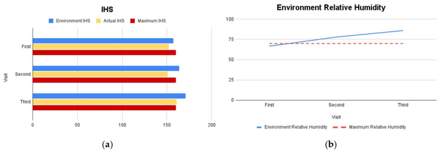
[ASLI DARI SUMBER PRIMER] Potongan PDF resmi animbiosci.org (ab-24-0678.pdf), Table 6, halaman 10 (300 DPI), bukti verifikasi Grafik 04 Panel A.
Ringkasan Angka Kunci: Nilai rata-rata HSI Indonesia Barat (155,52–165,42, puncak 187,84 Jun) dan Indonesia Timur (150,00–166,40, puncak 195,00 Jan & Des) melampaui ambang stres panas (>150–160) sepanjang 12 bulan tahun 2023.
Sumber: https://doi.org/10.5713/ab.24.0678 | PMC11969156
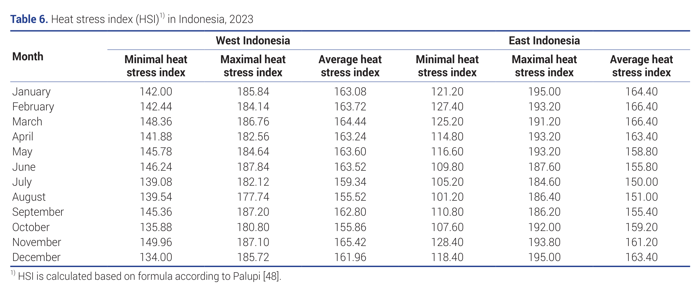
[ASLI DARI SUMBER PRIMER] Potongan PDF resmi animbiosci.org (ab-24-0678.pdf), Figure 8, halaman 10 (300 DPI).
Ringkasan Angka Kunci: Fluktuasi suhu harian di Indonesia Barat dan Timur berkisar dari minimum ~20–24°C hingga maksimum mencapai 34–36°C sepanjang tahun 2023, melampaui zona nyaman termal ayam dewasa.
Sumber: https://doi.org/10.5713/ab.24.0678 | PMC11969156
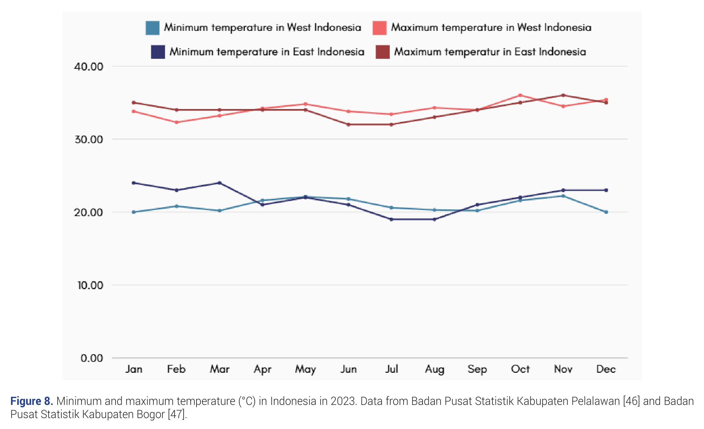
[ASLI DARI SUMBER PRIMER] Tangkapan layar retina 2,5× dari HTML resmi PMC (PMC12722053), Table 3, bukti verifikasi Grafik 04 Panel B.
Ringkasan Angka Kunci: Rerata suhu dalam kandang mencapai 29,3 ± 1,57°C (rentang 26–33,3°C), kelembapan relatif 81,9% (66–96%), amonia 7,3 ± 6,4 ppm, dan CO₂ 780 ± 222 ppm (maks 1.782 ppm) pada 10 kandang closed dan 4 semi-closed Jabar.
Sumber: https://doi.org/10.1017/awf.2025.10052 | PMC12722053
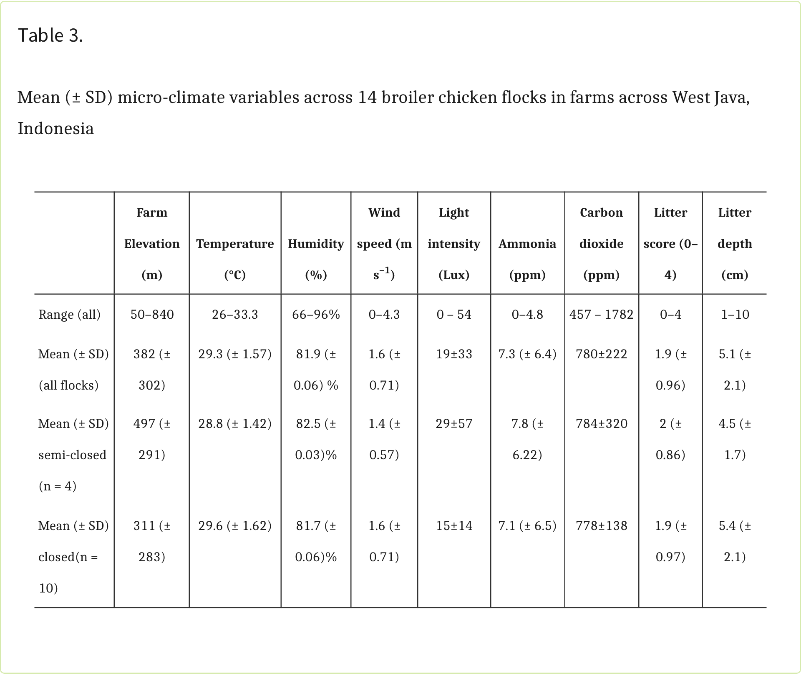
[ASLI DARI SUMBER PRIMER] Tangkapan layar retina 2,5× dari HTML resmi PMC (PMC12722053), Table 2, bukti verifikasi FPD 40% & HB 30% pada Grafik 04 Panel B.
Ringkasan Angka Kunci: Dari 2.104 ayam di 14 flok Jawa Barat, hanya 60% bebas FPD (artinya 40% mengalami lesi FPD skor 1–4) dan 70% bebas hock burn (artinya 30% mengalami hock burn skor 1–4), dengan variasi tajam antar-farm (misal F2 mencapai 44,4% FPD parah skor 3–4).
Sumber: https://doi.org/10.1017/awf.2025.10052 | PMC12722053
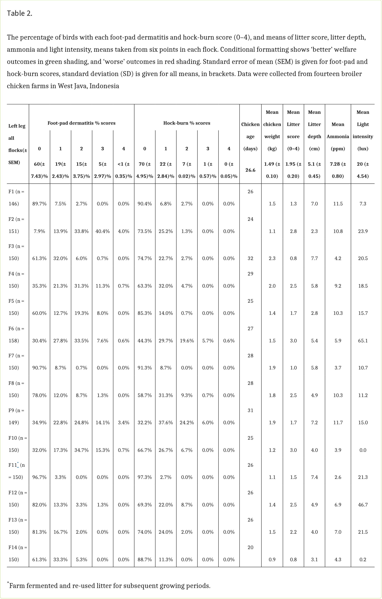
[ASLI DARI SUMBER PRIMER] Unduhan langsung berkas Figure 6 resmi dari PMC CDN (PMC12722053, S0962728625100523_fig6).
Ringkasan Angka Kunci: Ketidakmerataan mikroklimat di dalam kandang menyebabkan lesi FPD (panel a) dan hock burn (panel b) lebih tinggi pada Zona 1–2 dekat pintu/inlet dibanding Zona 4–6 dekat exhaust fan.
Sumber: https://doi.org/10.1017/awf.2025.10052 | PMC12722053
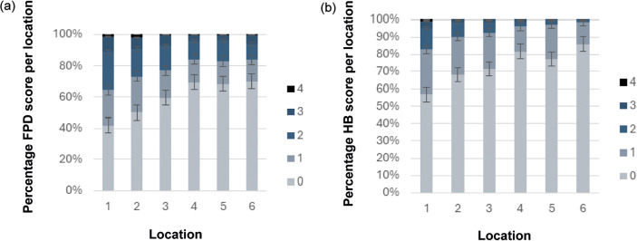
[ASLI DARI SUMBER PRIMER] Unduhan langsung berkas Figure 8 resmi dari PMC CDN (PMC12722053, S0962728625100523_fig8).
Ringkasan Angka Kunci: Persentase ayam terengah-engah (panting, batang oranye) meningkat tajam hingga ~70% saat suhu kandang menyentuh 33,3°C dan meningkat konsisten saat kelembapan melewati 83%–89%.
Sumber: https://doi.org/10.1017/awf.2025.10052 | PMC12722053
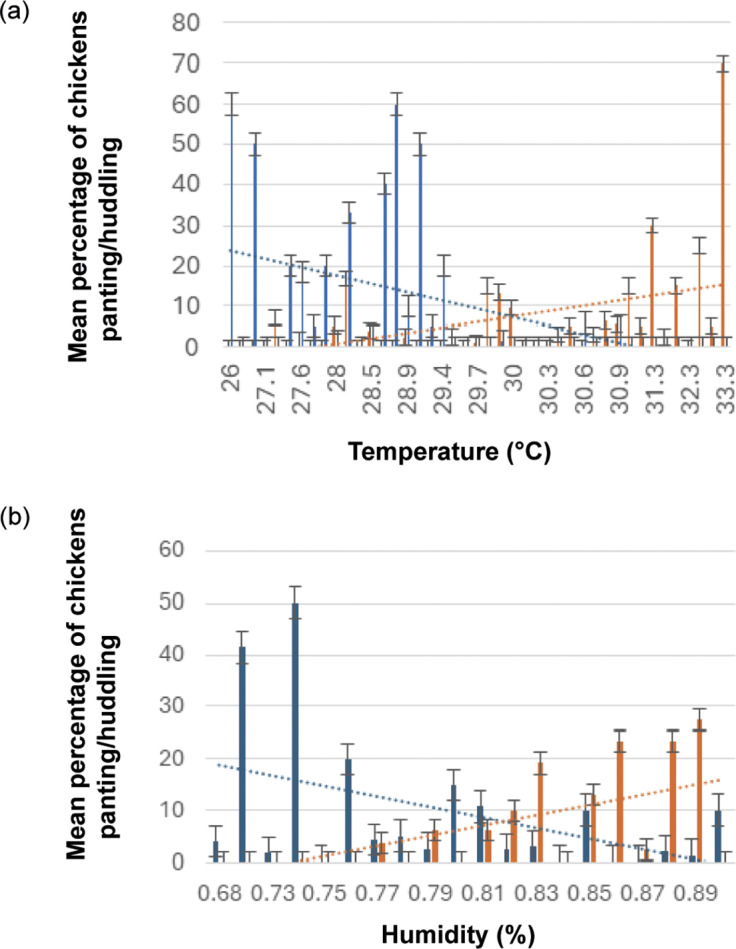
∑HL) terhadap Defisit Bobot Broiler Jawa Tengah[ASLI DARI SUMBER PRIMER] Potongan PDF resmi Advances in Animal and Veterinary Sciences (AAVS_14_5_1100-1111.pdf), Table 3, halaman 6 (300 DPI).
Ringkasan Angka Kunci: Variabel lingkungan menjelaskan 61% variasi defisit bobot hidup (R² = 0,61, p < 0,001), dengan beban panas kumulatif mingguan (∑HL) sebagai prediktor paling signifikan (B = -3,40, p < 0,001).
Sumber: https://doi.org/10.17582/journal.aavs/2026/14.5.1100.1111
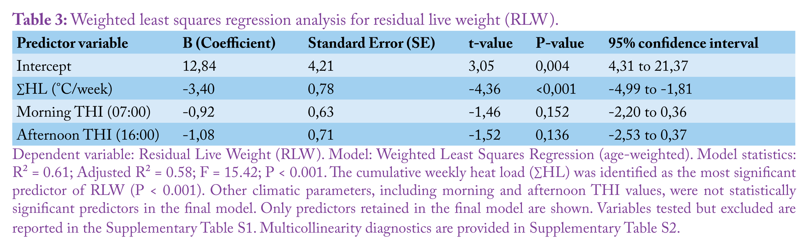
[ASLI DARI SUMBER PRIMER] Potongan PDF resmi Advances in Animal and Veterinary Sciences (AAVS_14_5_1100-1111.pdf), Table 6, halaman 9 (300 DPI).
Ringkasan Angka Kunci: THI sore pukul 16:00 dengan cut-off >79 (AUC = 0,709, p = 0,016) dan suhu pukul 16:00 >32,8°C (AUC = 0,694, p = 0,026) terbukti signifikan memprediksi kejadian mortalitas broiler open-sided di Jawa Tengah.
Sumber: https://doi.org/10.17582/journal.aavs/2026/14.5.1100.1111
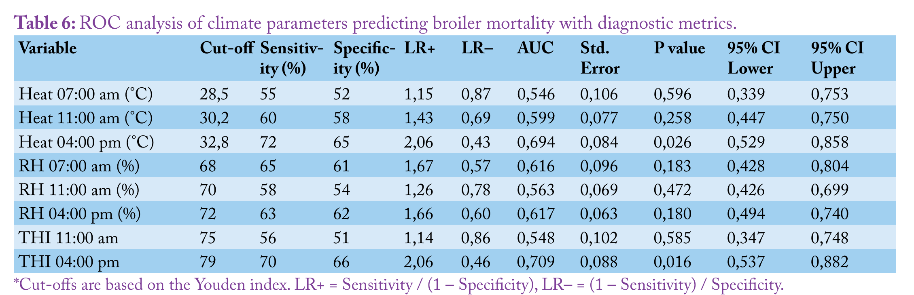
[ASLI DARI SUMBER PRIMER] Potongan PDF resmi JWPR (13(2): 223-232), Table 1, halaman 4 (300 DPI), bukti verifikasi Grafik 05 Panel A.
Ringkasan Angka Kunci: Biaya pakan (starter + finisher) mendominasi 62,27% total biaya pada farm mandiri (n = 103) dan 67,67% pada farm kontrak (n = 77), diikuti DOC (30,47% vs 26,10%), sementara obat/vitamin/vaksin hanya 1,62% vs 0,47%.
Sumber: https://doi.org/10.36380/jwpr.2023.25
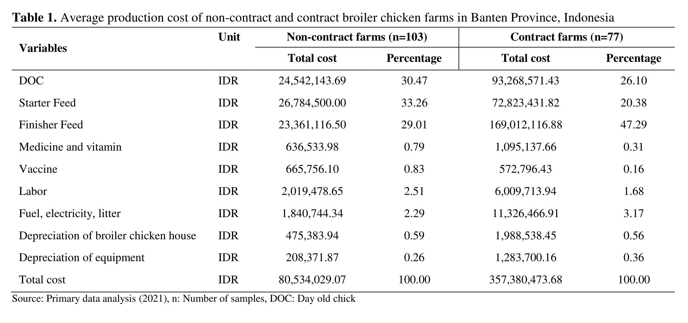
[ASLI DARI SUMBER PRIMER] Potongan PDF resmi JWPR (13(2): 223-232), Table 4, halaman 8 (300 DPI), bukti verifikasi Grafik 05 Panel A.
Ringkasan Angka Kunci: Sebanyak 56,31% peternak mandiri memiliki efisiensi teknis di bawah 0,70 (rerata TE 0,689, ruang pemborosan 31,1%), kontras dengan peternak kontrak yang 54,55%-nya mencapai TE ≥0,90 (rerata 0,893).
Sumber: https://doi.org/10.36380/jwpr.2023.25
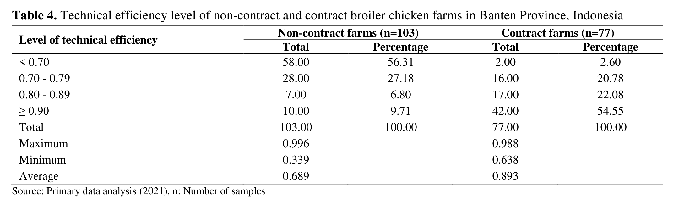
[ASLI DARI SUMBER PRIMER] Potongan PDF resmi Tropical Animal Science Journal IPB (46(3): 382-388), Table 5 & Table 6, halaman 5 (300 DPI).
Ringkasan Angka Kunci: Rerata inefisiensi biaya mencapai 24,2% (Mean Cost Inefficiency 0,242) pada 150 peternak broiler Jember–Lumajang–Banyuwangi, dengan pendidikan (-0,1220**), pengalaman (-0,1304**), ukuran rumah tangga, umur, dan rasio mortalitas signifikan pada taraf 95%.
Sumber: https://doi.org/10.5398/tasj.2023.46.3.382
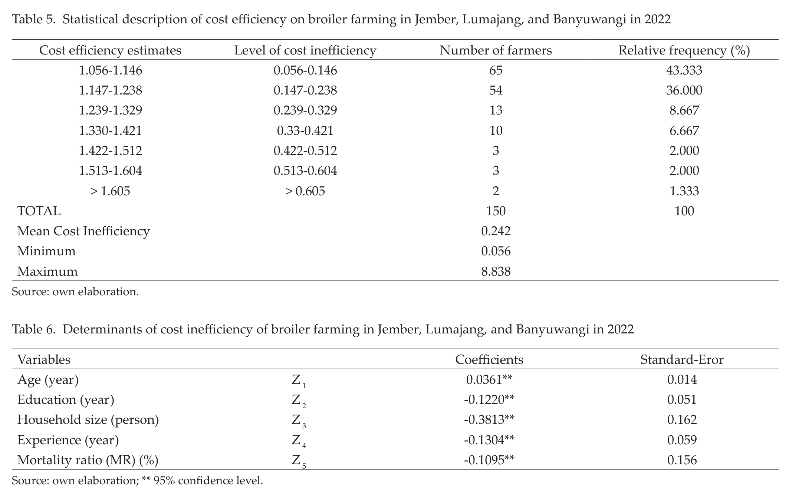
[ASLI DARI SUMBER PRIMER] Potongan PDF resmi Tropical Animal Science Journal IPB (47(3): 392-401), Table 3, halaman 4 (300 DPI).
Ringkasan Angka Kunci: Pada usaha layer rakyat (skala 100 ekor), biaya pakan meningkat dari Rp24,09 juta/thn (2019) menjadi Rp28,11 juta/thn (2022), menyerap porsi terbesar biaya operasional, sehingga menekan rasio pendapatan terhadap biaya (R/C ratio) di kisaran tipis 1,1375–1,1473.
Sumber: https://doi.org/10.5398/tasj.2024.47.3.392
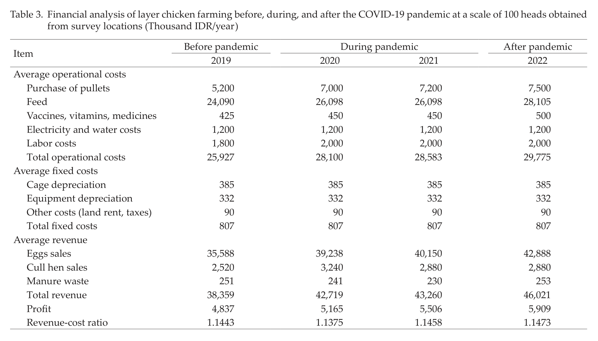
[ASLI DARI SUMBER PRIMER] Potongan PDF resmi JITV (26(4): 187-194), Figure 1, halaman 4 (300 DPI).
Ringkasan Angka Kunci: Kurva Hen-Day Production (HDP) aktual di tiga sentra layer rakyat Indonesia (Blitar, Payakumbuh, Sidrap) berada di bawah potensi genetik standar Hy-Line sepanjang seluruh umur produksi (bulan ke-5 hingga ke-24).
Sumber: https://doi.org/10.14334/jitv.v26i4.2697
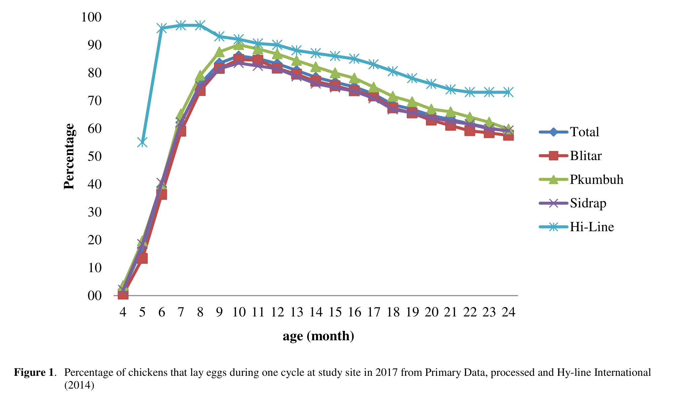
[ASLI DARI SUMBER PRIMER] Potongan PDF resmi Acta Scientiarum. Animal Sciences (v.48, e74435), Table 1, halaman 6 (300 DPI), bukti verifikasi Grafik 05 Panel B.
Ringkasan Angka Kunci: Pada periode keseluruhan 1–5 minggu, kandang open house (OH) mengalami pembengkakan FCR 1,76 ± 0,04 vs 1,55 ± 0,01 di closed house (CH, p < 0,001), bobot panen lebih rendah 1.930 g vs 2.295 g, dan deplesi 4,54% vs 2,47%.
Sumber: https://doi.org/10.4025/actascianimsci.v48i1.74435
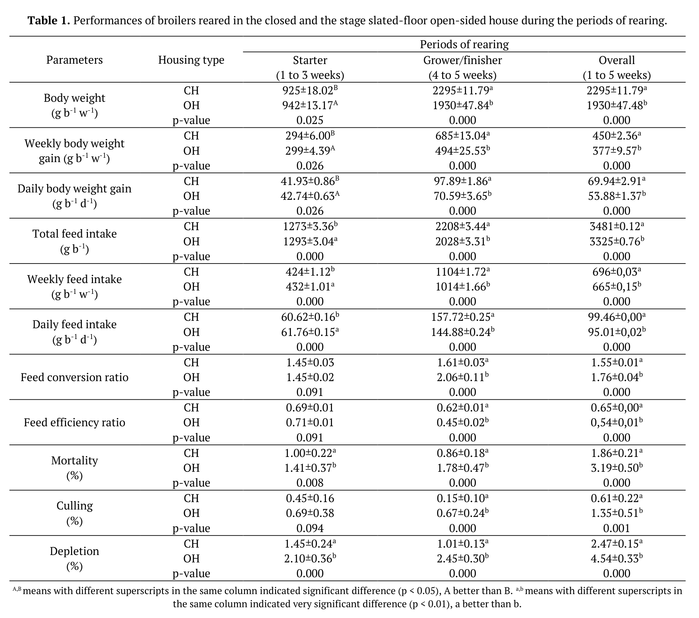
[ASLI DARI SUMBER PRIMER] Potongan PDF resmi Jurnal Sain Veteriner UGM (42(3): 302-309), Table 2, halaman 4 (300 DPI), bukti verifikasi Grafik 05 Panel B.
Ringkasan Angka Kunci: Di lokasi mitra lokal PT Zara Bogor (total 12.000 ekor Cobb, 2 siklus), kandang open house mencatat FCR 1,49 dan mortalitas 10,16% dibandingkan closed house IoT dengan FCR 1,40 dan mortalitas 8,30% (+5,21% bobot panen).
Sumber: https://doi.org/10.22146/jsv.82670
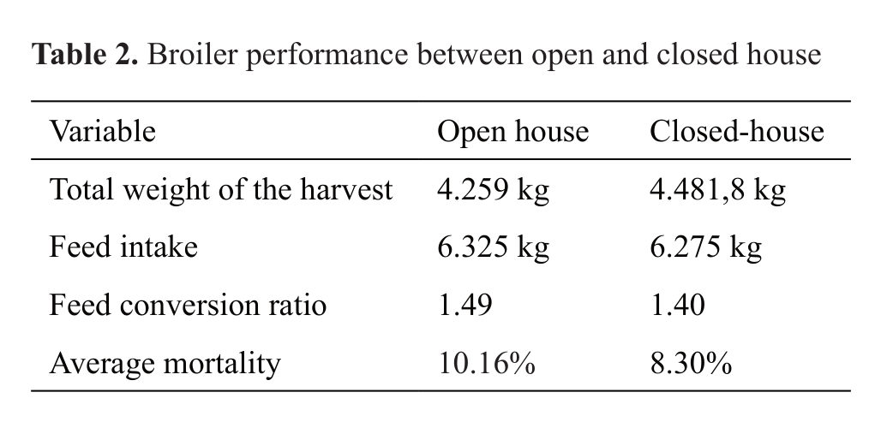
[ASLI DARI SUMBER PRIMER] Potongan PDF resmi JAVEST Unair (3(1): 6-11), Gambar 1 & Gambar 2, halaman 3 (300 DPI), bukti verifikasi Grafik 05 Panel B.
Ringkasan Angka Kunci: Pada populasi setara 20.000 ekor/kandang di Trenggalek, kandang open house tertinggal pada minggu 3–5 sehingga FCR akhir membengkak ke 1,605 (vs 1,416 CH) dan IP turun ke 319,4 (vs 366,5 CH).
Sumber: https://doi.org/10.20473/javest.v3.i1.2022.6-11
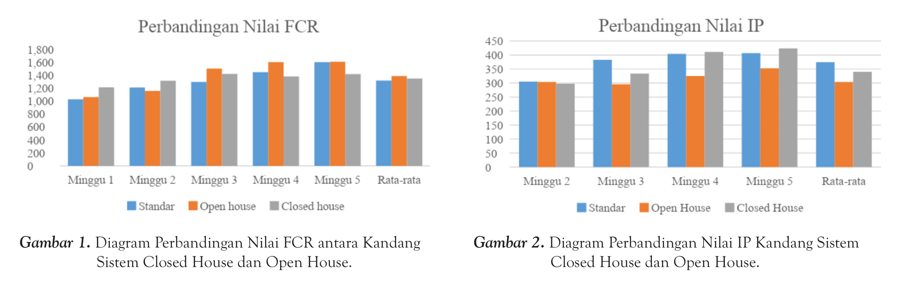
[ASLI DARI SUMBER PRIMER] Potongan PDF resmi Jurnal Agribisnis Indonesia IPB (11(2): 422-431), Tabel 2, halaman 6 (300 DPI).
Ringkasan Angka Kunci: Menunjukkan panjangnya periode balik modal (Payback Period) kandang closed house semi-otomatis (43 periode ≈ 6–7 tahun, ROI 28%, NPM 6,8%) dibanding otomatis (27 periode, ROI 43,5%, R/C 1,12), yang menjelaskan tingginya hambatan modal bagi peternak rakyat.
Sumber: https://doi.org/10.29244/jai.2023.11.2.422-431
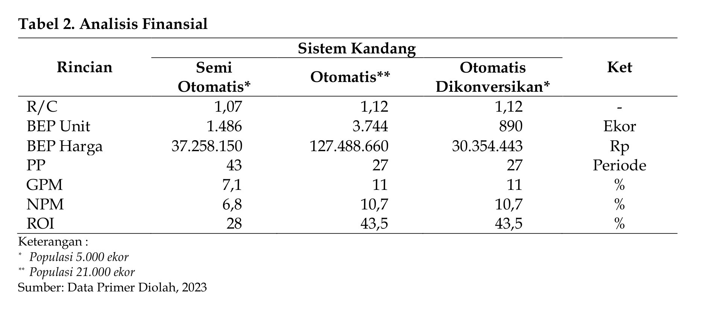
[ASLI DARI SUMBER PRIMER] Potongan PDF resmi Kementerian Pertanian RI (bbpkhcinagara.bppsdmp.pertanian.go.id), Tabel 1, halaman 2 (300 DPI), sekaligus bukti verifikasi garis acuan FCR Grafik 05 Panel B.
Ringkasan Angka Kunci: Dokumen resmi Kementan RI menegaskan investasi awal close house 3–4 kali lipat dari open house, biaya operasional listrik tinggi, ketergantungan listrik "Sangat tinggi; risiko tinggi jika listrik padam", serta tolok ukur FCR 1,45–1,55 (CH) vs >1,65 (OH).
Sumber: PDF Resmi BBPKH Cinagara Kementan RI (Des 2025)
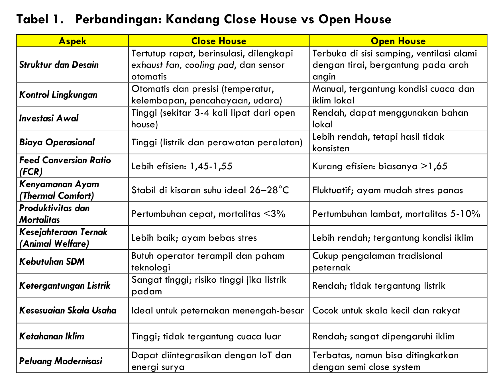
Catatan Kejujuran Akses Sumber (
Mastuti et al., 2023): Berkas PDFMastuti et al. (2023, Animal Production SINTA 2)(https://doi.org/10.20884/1.jap.2023.25.1.200) pada serveranimalproduction.idgagal diunduh karena server mengembalikan TLS connection reset (HTTPS) dan blokir firewallWeb Page Blocked(HTTP). Sesuai aturan anti-hoax, tabelnya tidak digambar ulang.
[ASLI DARI SUMBER PRIMER] Unduhan langsung berkas Figure 2 resmi dari PMC CDN (PMC9851045, peerj-11-14600-g002).
Ringkasan Angka Kunci: Mayoritas pekerja kandang unggas di Indonesia (58%, terdiri dari 33% Low dan 25% Moderate) belum mencapai tingkat pengetahuan tinggi terkait Avian Influenza dan protokol pencegahannya (hanya 42% High).
Sumber: https://doi.org/10.7717/peerj.14600 | PMC9851045
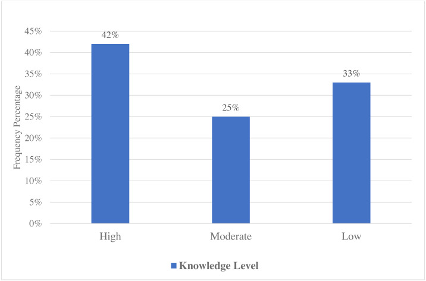
[ASLI DARI SUMBER PRIMER] Potongan PDF resmi PLOS ONE (19(8): e0308379), Table 1, halaman 5 (300 DPI).
Ringkasan Angka Kunci: Rincian responden lintas rantai nilai (perusahaan integrator, peternak layer kecil-menengah, asosiasi, pemerintah, perguruan tinggi, TSO pakan/farmasi, hingga poultry shop) yang memvalidasi kendala recording kertas/WhatsApp dan kurangnya sistem pendukung keputusan.
Sumber: https://doi.org/10.1371/journal.pone.0308379
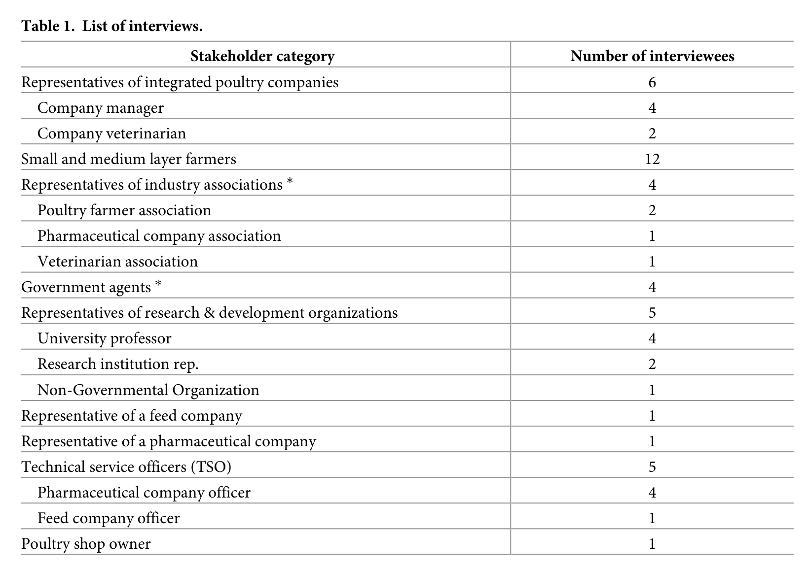
[ASLI DARI SUMBER PRIMER] Unduhan langsung berkas Fig. 4 resmi dari PMC CDN (PMC10272334, gr4).
Ringkasan Angka Kunci: Memetakan keterkaitan struktural antara budaya silo organisasi (node 8), komunikasi tidak transparan/terlambat (node 4), kurangnya penyelarasan (node 7), hingga kelangkaan personel terampil (node 12) dan kekakuan pendanaan (node 13).
Sumber: https://doi.org/10.1016/j.heliyon.2023.e16808 | PMC10272334
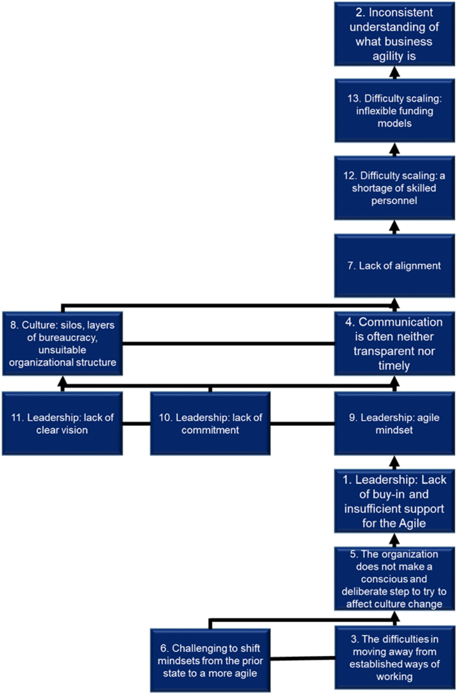
[ASLI DARI SUMBER PRIMER] Unduhan langsung berkas resolusi tinggi Fig. 4 resmi dari Elsevier CDN (1-s2.0-S0167587723001678-gr4_lrg.jpg).
Ringkasan Angka Kunci: Peta empiris fragmentasi (silo) arus data pelaporan penyakit & konsultasi kesehatan antara rantai korporasi terintegrasi (kiri: pekerja inti/plasma → supervisor → TSO → manajer → kantor pusat) dengan peternak mandiri (kanan: poultry shop, TSO swasta, lab swasta, asosiasi, dan Dinas/Kementan).
Sumber: https://doi.org/10.1016/j.prevetmed.2023.106003 | PubMed
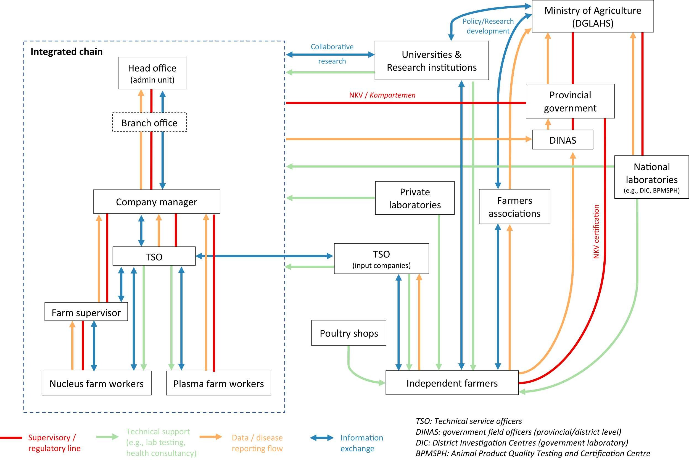
Catatan Kejujuran Akses Sumber (
Riyanto & Almawachida, 2025): Unduhan PDFRiyanto & Almawachida (2025, JIIP UB SINTA 2)(https://doi.org/10.21776/ub.jiip.2025.035.01.3) terhalang gerbang verifikasi anti-bot Cloudflare (challenges.cloudflare.com) pada serverjiip.ub.ac.id. Sesuai aturan integritas dan anti-bypass, gerbang tersebut tidak dilewati dan tabel aslinya tidak dibuat ulang.
[ASLI DARI SUMBER PRIMER] Tangkapan layar retina 2,5× dari HTML resmi PMC (PMC9047124), Table-1.
Ringkasan Angka Kunci: Dari 132 peternak broiler kecil Bogor, antibiotik Critically Important WHO mendominasi: Quinolones 33,3% (Enrofloxacin 26,5%), Penicillins 33,3% (Amoxicillin 32,6%), Polymyxins/Colistin 16,7%, dan Macrolides 16,7%.
Sumber: https://doi.org/10.14202/vetworld.2022.707-713 | PMC9047124
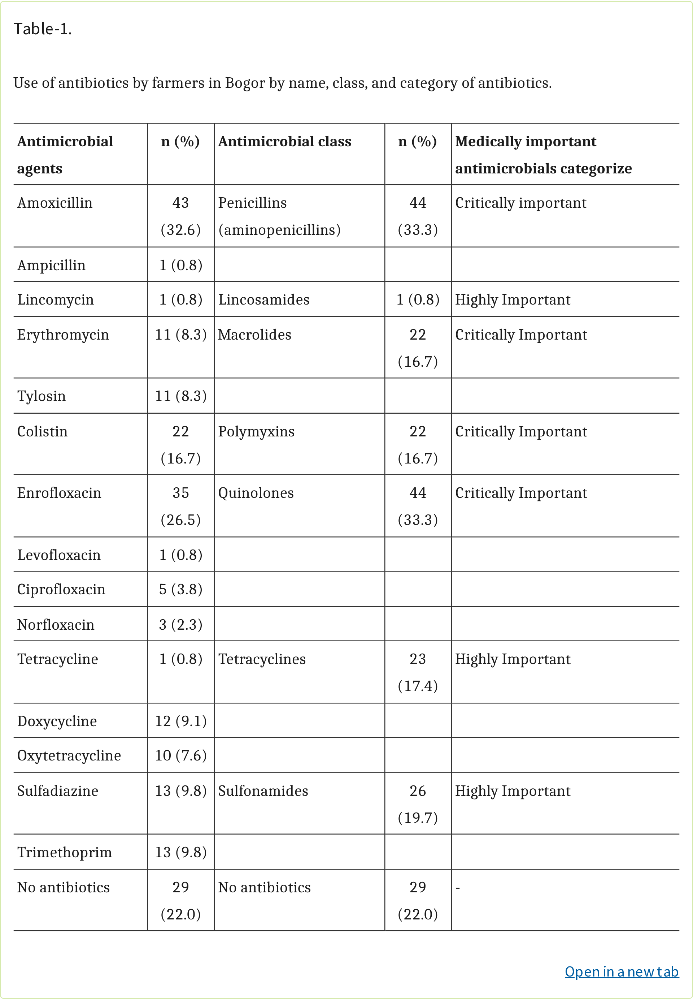
[ASLI DARI SUMBER PRIMER] Tangkapan layar retina 2,5× dari HTML resmi PMC (PMC9047124), Table-3.
Ringkasan Angka Kunci: Sebanyak 75,0% peternak menggunakan antibiotik sebagai flushing dan 56,1% sebagai profilaksis (bahkan 45,5% memakai kombinasi), sementara pemakaian untuk terapi penyakit aktual hanya 8,3%.
Sumber: https://doi.org/10.14202/vetworld.2022.707-713 | PMC9047124
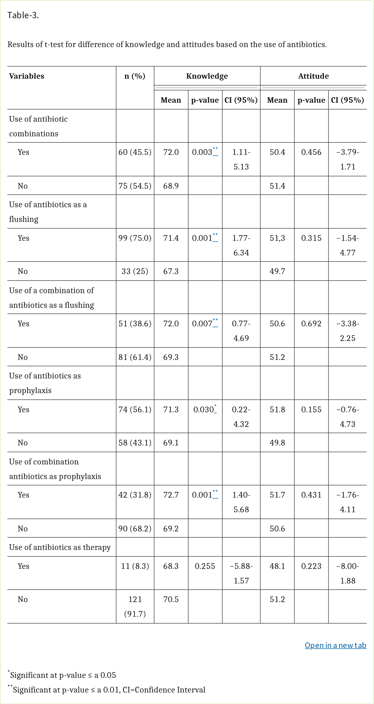
[ASLI DARI SUMBER PRIMER] Unduhan langsung berkas Figure 2 resmi dari PMC CDN (PMC11672412, antibiotics-13-01181-g002).
Ringkasan Angka Kunci: Memperlihatkan tingginya proporsi isolat E. coli resisten (Non-Wild Type ECOFF oranye & non-susceptible CBP biru) lintas 19 farm Jabar, dengan ciprofloxacin, ampicillin, sulfamethoxazole, dan tetracycline mendekati 100% di sebagian besar peternakan.
Sumber: https://doi.org/10.3390/antibiotics13121181 | PMC11672412
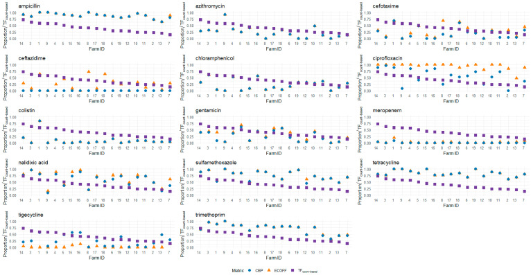
[ASLI DARI SUMBER PRIMER] Unduhan langsung berkas Fig. 2 resmi dari PMC CDN (PMC12681536, gr2).
Ringkasan Angka Kunci: Membuktikan pola rutin flushing antibiotik kelas kritis WHO (fluoroquinolones HPCIA mencapai 35%–43% siklus; polymyxins 11%–18%; penicillins 12%–19%) sejak hari ke-1 hingga hari ke-4 pemeliharaan broiler di Jawa Barat.
Sumber: https://doi.org/10.1016/j.psj.2025.106010 | PMC12681536
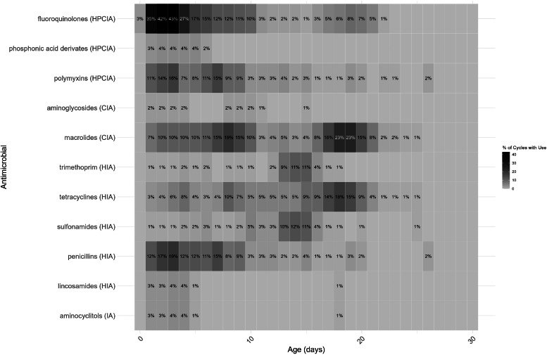